Iozone results for iread, data are arranged by file size
- Baseline data set
- ./ext4/ext4_1.iozone
- ./ext4/ext4_2.iozone
- ./ext4/ext4_3.iozone
- ./ext4/ext4_4.iozone
- ./ext4/ext4_5.iozone
- Investigated data set
- ./xfs/xfs1.iozone
- ./xfs/xfs2.iozone
- ./xfs/xfs3.iozone
- ./xfs/xfs4.iozone
- ./xfs/xfs5.iozone
mean => Arithmetic mean
standar dev. => Sample standard deviation
ci. max 90%, ci.min => confidence interval at confidence level 90% => it means that mean value of the distribution lies with 90% propability in interval ci_min-ci_max
geom. mean => Geometric mean
median => Second quartile = cuts data set in half = 50th percentile
first quartile => cuts off lowest 25% of data = 25th percentile
third quartile => cuts off highest 25% of data, or lowest 75% = 75th percentile
minimum => Lowest value of data set
maximum => Hightest value of data set
baseline set1 difference => Difference of medians of both sets in percennt. Arithmetic means are used in detail mode instead.
ttest p-value => Student's t-test p-value = probability the both data sets are equal
ttest equality => If p-value is higher than 0.1, data sets are considered being equal with 90% probability. Otherwise the data sets are considered being different.
Linear regression of all results regression line is in y = ax form, b coeficient is zero.
for details about operations performed see Iozone documentation
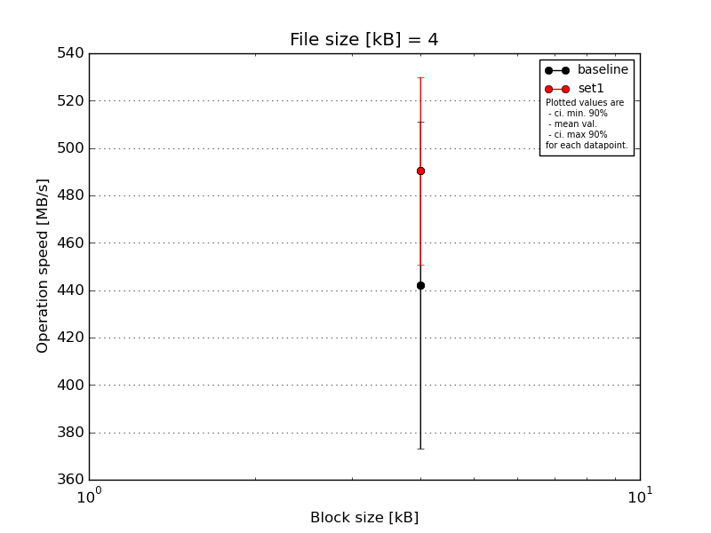
|
File size [kB] |
Block size [kB] |
| 4 |
| baseline | 4 | 391.91 |
| 4 | 484.65 |
| 4 | 391.91 |
| 4 | 391.91 |
| 4 | 549.69 |
| mean val. |
442.01 |
| standard dev. |
72.36 |
| ci. min. 90% |
373.03 |
| ci. max 90% |
511.0 |
| geom. mean |
437.54 |
| median |
391.91 |
| first quartile |
391.91 |
| third quartile |
484.65 |
| minimum |
391.91 |
| maximum |
549.69 |
| set1 | 4 | 549.69 |
| 4 | 499.42 |
| 4 | 484.65 |
| 4 | 433.37 |
| 4 | 484.65 |
| mean val. |
490.36 |
| standard dev. |
41.58 |
| ci. min. 90% |
450.72 |
| ci. max 90% |
530.0 |
| geom. mean |
488.95 |
| median |
484.65 |
| first quartile |
484.65 |
| third quartile |
499.42 |
| minimum |
433.37 |
| maximum |
549.69 |
| baseline set1 difference |
10.94 % |
| ttest p-value |
0.2313 |
| ttest equality |
SAME |
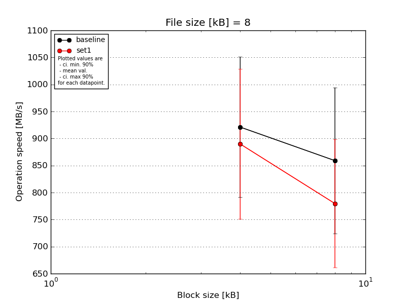
|
File size [kB] |
Block size [kB] |
| 4 |
8 |
| baseline | 8 | 1099.39 | 998.85 |
| 8 | 969.3 | 998.85 |
| 8 | 783.82 | 866.75 |
| 8 | 783.82 | 715.37 |
| 8 | 969.3 | 715.37 |
| mean val. |
921.13 |
859.04 |
| standard dev. |
136.13 |
141.81 |
| ci. min. 90% |
791.34 |
723.84 |
| ci. max 90% |
1050.91 |
994.23 |
| geom. mean |
913.06 |
849.55 |
| median |
969.3 |
866.75 |
| first quartile |
783.82 |
715.37 |
| third quartile |
969.3 |
998.85 |
| minimum |
783.82 |
715.37 |
| maximum |
1099.39 |
998.85 |
| set1 | 8 | 866.75 | 866.75 |
| 8 | 969.3 | 597.89 |
| 8 | 644.97 | 866.75 |
| 8 | 998.85 | 866.75 |
| 8 | 969.3 | 700.08 |
| mean val. |
889.83 |
779.64 |
| standard dev. |
145.78 |
124.62 |
| ci. min. 90% |
750.85 |
660.83 |
| ci. max 90% |
1028.82 |
898.46 |
| geom. mean |
878.96 |
771.06 |
| median |
969.3 |
866.75 |
| first quartile |
866.75 |
700.08 |
| third quartile |
969.3 |
866.75 |
| minimum |
644.97 |
597.89 |
| maximum |
998.85 |
866.75 |
| baseline set1 difference |
-3.4 % |
-9.24 % |
| ttest p-value |
0.7348 |
0.3745 |
| ttest equality |
SAME |
SAME |
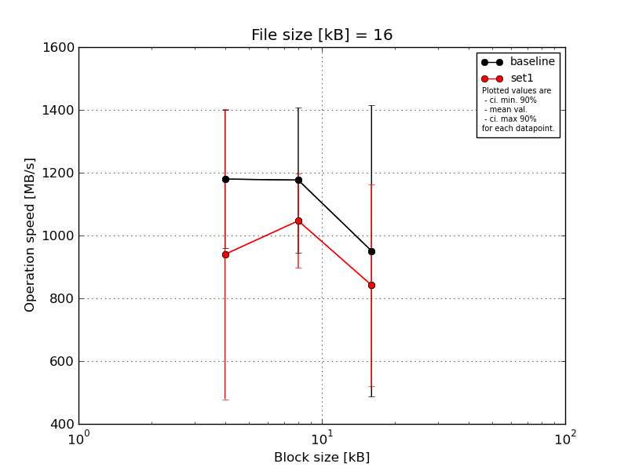
|
File size [kB] |
Block size [kB] |
| 4 |
8 |
16 |
| baseline | 16 | 1430.74 | 980.99 | 966.53 |
| 16 | 1043.47 | 1114.45 | 1289.93 |
| 16 | 1430.74 | 1430.74 | 1195.79 |
| 16 | 966.53 | 1430.74 | 106.42 |
| 16 | 1027.12 | 925.58 | 1195.79 |
| mean val. |
1179.72 |
1176.5 |
950.89 |
| standard dev. |
230.93 |
242.03 |
486.9 |
| ci. min. 90% |
959.55 |
945.75 |
486.69 |
| ci. max 90% |
1399.89 |
1407.25 |
1415.09 |
| geom. mean |
1162.22 |
1156.78 |
717.17 |
| median |
1043.47 |
1114.45 |
1195.79 |
| first quartile |
1027.12 |
980.99 |
966.53 |
| third quartile |
1430.74 |
1430.74 |
1195.79 |
| minimum |
966.53 |
925.58 |
106.42 |
| maximum |
1430.74 |
1430.74 |
1289.93 |
| set1 | 16 | 1315.83 | 980.99 | 1195.79 |
| 16 | 1043.47 | 980.99 | 864.53 |
| 16 | 925.58 | 1315.83 | 300.89 |
| 16 | 126.08 | 912.68 | 821.19 |
| 16 | 1289.93 | 1043.47 | 1027.12 |
| mean val. |
940.18 |
1046.8 |
841.9 |
| standard dev. |
484.02 |
157.35 |
336.59 |
| ci. min. 90% |
478.72 |
896.78 |
521.0 |
| ci. max 90% |
1401.64 |
1196.81 |
1162.81 |
| geom. mean |
729.56 |
1038.17 |
765.21 |
| median |
1043.47 |
980.99 |
864.53 |
| first quartile |
925.58 |
980.99 |
821.19 |
| third quartile |
1289.93 |
1043.47 |
1027.12 |
| minimum |
126.08 |
912.68 |
300.89 |
| maximum |
1315.83 |
1315.83 |
1195.79 |
| baseline set1 difference |
-20.3 % |
-11.02 % |
-11.46 % |
| ttest p-value |
0.3472 |
0.3445 |
0.6914 |
| ttest equality |
SAME |
SAME |
SAME |
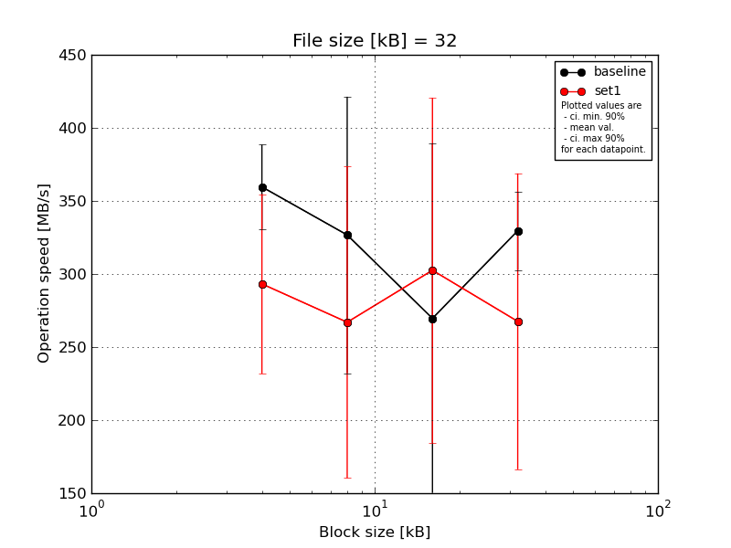
|
File size [kB] |
Block size [kB] |
| 4 |
8 |
16 |
32 |
| baseline | 32 | 385.73 | 385.73 | 381.24 | 351.58 |
| 32 | 328.66 | 154.06 | 132.96 | 298.02 |
| 32 | 372.57 | 371.51 | 367.35 | 363.28 |
| 32 | 325.4 | 331.99 | 331.99 | 328.66 |
| 32 | 385.73 | 390.32 | 134.6 | 306.38 |
| mean val. |
359.62 |
326.72 |
269.63 |
329.58 |
| standard dev. |
30.25 |
99.21 |
125.31 |
28.08 |
| ci. min. 90% |
330.78 |
232.13 |
150.16 |
302.81 |
| ci. max 90% |
388.46 |
421.31 |
389.09 |
356.36 |
| geom. mean |
358.58 |
309.95 |
242.12 |
328.63 |
| median |
372.57 |
371.51 |
331.99 |
328.66 |
| first quartile |
328.66 |
331.99 |
134.6 |
306.38 |
| third quartile |
385.73 |
385.73 |
367.35 |
351.58 |
| minimum |
325.4 |
154.06 |
132.96 |
298.02 |
| maximum |
385.73 |
390.32 |
381.24 |
363.28 |
| set1 | 32 | 401.07 | 416.36 | 452.28 | 406.04 |
| 32 | 274.32 | 306.38 | 240.58 | 124.03 |
| 32 | 298.02 | 190.57 | 312.22 | 328.66 |
| 32 | 236.67 | 294.67 | 376.85 | 244.17 |
| 32 | 256.1 | 127.03 | 130.83 | 234.98 |
| mean val. |
293.24 |
267.0 |
302.55 |
267.57 |
| standard dev. |
64.4 |
111.87 |
123.85 |
106.21 |
| ci. min. 90% |
231.84 |
160.35 |
184.47 |
166.32 |
| ci. max 90% |
354.63 |
373.66 |
420.63 |
368.83 |
| geom. mean |
288.18 |
246.49 |
278.49 |
248.6 |
| median |
274.32 |
294.67 |
312.22 |
244.17 |
| first quartile |
256.1 |
190.57 |
240.58 |
234.98 |
| third quartile |
298.02 |
306.38 |
376.85 |
328.66 |
| minimum |
236.67 |
127.03 |
130.83 |
124.03 |
| maximum |
401.07 |
416.36 |
452.28 |
406.04 |
| baseline set1 difference |
-18.46 % |
-18.28 % |
12.21 % |
-18.81 % |
| ttest p-value |
0.0704 |
0.3979 |
0.687 |
0.2424 |
| ttest equality |
DIFF |
SAME |
SAME |
SAME |
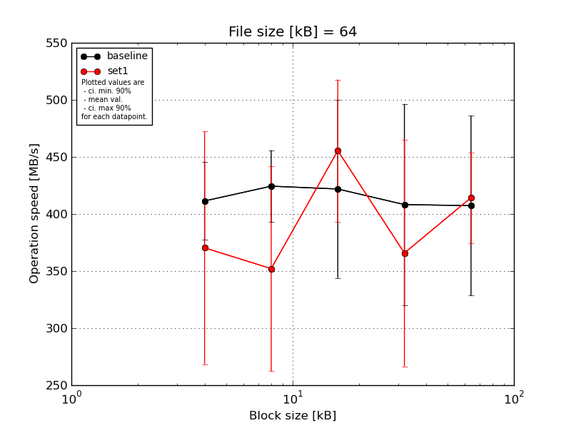
|
File size [kB] |
Block size [kB] |
| 4 |
8 |
16 |
32 |
64 |
| baseline | 64 | 469.96 | 474.21 | 276.58 | 481.17 | 466.61 |
| 64 | 405.92 | 434.15 | 466.61 | 425.0 | 268.37 |
| 64 | 371.94 | 385.62 | 456.06 | 459.25 | 431.29 |
| 64 | 405.92 | 408.45 | 466.61 | 427.78 | 400.34 |
| 64 | 403.42 | 419.56 | 443.71 | 248.05 | 469.96 |
| mean val. |
411.43 |
424.4 |
421.91 |
408.25 |
407.31 |
| standard dev. |
35.74 |
33.01 |
81.79 |
92.52 |
82.72 |
| ci. min. 90% |
377.35 |
392.93 |
343.93 |
320.04 |
328.45 |
| ci. max 90% |
445.5 |
455.87 |
499.89 |
496.46 |
486.18 |
| geom. mean |
410.23 |
423.39 |
414.16 |
397.83 |
399.38 |
| median |
405.92 |
419.56 |
456.06 |
427.78 |
431.29 |
| first quartile |
403.42 |
408.45 |
443.71 |
425.0 |
400.34 |
| third quartile |
405.92 |
434.15 |
466.61 |
459.25 |
466.61 |
| minimum |
371.94 |
385.62 |
276.58 |
248.05 |
268.37 |
| maximum |
469.96 |
474.21 |
466.61 |
481.17 |
469.96 |
| set1 | 64 | 508.22 | 414.26 | 520.33 | 462.49 | 484.73 |
| 64 | 220.88 | 199.08 | 442.96 | 425.0 | 378.93 |
| 64 | 351.02 | 349.15 | 512.19 | 223.14 | 395.51 |
| 64 | 428.48 | 355.3 | 359.2 | 430.59 | 395.51 |
| 64 | 343.21 | 442.96 | 442.96 | 287.82 | 416.89 |
| mean val. |
370.36 |
352.15 |
455.53 |
365.81 |
414.31 |
| standard dev. |
107.05 |
94.28 |
65.2 |
104.27 |
41.61 |
| ci. min. 90% |
268.3 |
262.26 |
393.36 |
266.4 |
374.64 |
| ci. max 90% |
472.42 |
442.03 |
517.69 |
465.21 |
453.98 |
| geom. mean |
356.95 |
339.82 |
451.6 |
352.41 |
412.74 |
| median |
351.02 |
355.3 |
442.96 |
425.0 |
395.51 |
| first quartile |
343.21 |
349.15 |
442.96 |
287.82 |
395.51 |
| third quartile |
428.48 |
414.26 |
512.19 |
430.59 |
416.89 |
| minimum |
220.88 |
199.08 |
359.2 |
223.14 |
378.93 |
| maximum |
508.22 |
442.96 |
520.33 |
462.49 |
484.73 |
| baseline set1 difference |
-9.98 % |
-17.02 % |
7.97 % |
-10.4 % |
1.72 % |
| ttest p-value |
0.4394 |
0.1445 |
0.4928 |
0.5152 |
0.87 |
| ttest equality |
SAME |
SAME |
SAME |
SAME |
SAME |
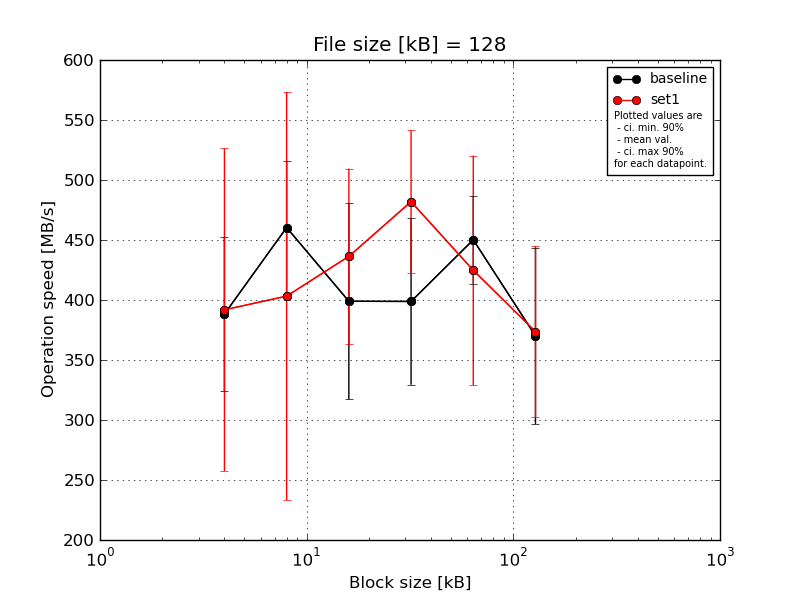
|
File size [kB] |
Block size [kB] |
| 4 |
8 |
16 |
32 |
64 |
128 |
| baseline | 128 | 335.26 | 500.37 | 490.08 | 454.79 | 484.64 | 459.58 |
| 128 | 403.05 | 408.39 | 432.65 | 417.82 | 403.36 | 265.89 |
| 128 | 313.98 | 508.13 | 454.4 | 423.56 | 486.44 | 327.11 |
| 128 | 404.6 | 386.98 | 291.3 | 426.66 | 416.83 | 372.15 |
| 128 | 484.64 | 497.99 | 326.29 | 271.12 | 459.58 | 425.28 |
| mean val. |
388.31 |
460.37 |
398.94 |
398.79 |
450.17 |
370.0 |
| standard dev. |
67.27 |
57.84 |
85.71 |
72.78 |
38.39 |
77.08 |
| ci. min. 90% |
324.17 |
405.22 |
317.23 |
329.4 |
413.57 |
296.52 |
| ci. max 90% |
452.44 |
515.52 |
480.65 |
468.18 |
486.77 |
443.48 |
| geom. mean |
383.72 |
457.35 |
391.16 |
392.46 |
448.84 |
363.27 |
| median |
403.05 |
497.99 |
432.65 |
423.56 |
459.58 |
372.15 |
| first quartile |
335.26 |
408.39 |
326.29 |
417.82 |
416.83 |
327.11 |
| third quartile |
404.6 |
500.37 |
454.4 |
426.66 |
484.64 |
425.28 |
| minimum |
313.98 |
386.98 |
291.3 |
271.12 |
403.36 |
265.89 |
| maximum |
484.64 |
508.13 |
490.08 |
454.79 |
486.44 |
459.58 |
| set1 | 128 | 625.04 | 648.22 | 547.96 | 573.11 | 534.0 | 469.87 |
| 128 | 287.94 | 285.28 | 339.61 | 490.54 | 390.73 | 415.18 |
| 128 | 399.36 | 488.25 | 464.87 | 404.29 | 444.76 | 273.52 |
| 128 | 373.21 | 188.54 | 416.83 | 449.34 | 482.41 | 337.64 |
| 128 | 273.52 | 405.86 | 412.56 | 492.38 | 271.82 | 372.15 |
| mean val. |
391.82 |
403.23 |
436.37 |
481.93 |
424.75 |
373.67 |
| standard dev. |
141.05 |
178.37 |
76.77 |
62.43 |
100.26 |
74.68 |
| ci. min. 90% |
257.34 |
233.17 |
363.17 |
422.42 |
329.16 |
302.47 |
| ci. max 90% |
526.29 |
573.29 |
509.56 |
541.45 |
520.33 |
444.87 |
| geom. mean |
374.2 |
369.73 |
431.02 |
478.74 |
414.05 |
367.52 |
| median |
373.21 |
405.86 |
416.83 |
490.54 |
444.76 |
372.15 |
| first quartile |
287.94 |
285.28 |
412.56 |
449.34 |
390.73 |
337.64 |
| third quartile |
399.36 |
488.25 |
464.87 |
492.38 |
482.41 |
415.18 |
| minimum |
273.52 |
188.54 |
339.61 |
404.29 |
271.82 |
273.52 |
| maximum |
625.04 |
648.22 |
547.96 |
573.11 |
534.0 |
469.87 |
| baseline set1 difference |
0.9 % |
-12.41 % |
9.38 % |
20.85 % |
-5.65 % |
0.99 % |
| ttest p-value |
0.9612 |
0.5149 |
0.4878 |
0.0885 |
0.6108 |
0.9409 |
| ttest equality |
SAME |
SAME |
SAME |
DIFF |
SAME |
SAME |
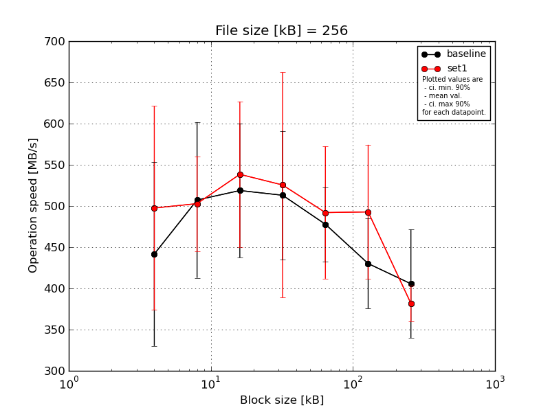
|
File size [kB] |
Block size [kB] |
| 4 |
8 |
16 |
32 |
64 |
128 |
256 |
| baseline | 256 | 582.93 | 628.34 | 624.97 | 564.42 | 417.96 | 513.3 | 523.03 |
| 256 | 264.87 | 483.48 | 558.11 | 524.34 | 520.95 | 466.49 | 397.52 |
| 256 | 447.19 | 584.23 | 461.36 | 565.63 | 523.03 | 391.87 | 359.25 |
| 256 | 496.06 | 381.74 | 542.23 | 369.76 | 486.4 | 382.86 | 351.54 |
| 256 | 417.46 | 458.53 | 407.24 | 541.11 | 440.98 | 396.32 | 396.77 |
| mean val. |
441.7 |
507.26 |
518.78 |
513.05 |
477.86 |
430.17 |
405.62 |
| standard dev. |
117.03 |
99.09 |
85.31 |
81.93 |
47.22 |
57.19 |
68.93 |
| ci. min. 90% |
330.12 |
412.79 |
437.45 |
434.94 |
432.85 |
375.65 |
339.91 |
| ci. max 90% |
553.28 |
601.74 |
600.11 |
591.16 |
522.88 |
484.69 |
471.34 |
| geom. mean |
427.62 |
499.41 |
513.02 |
506.98 |
475.96 |
427.26 |
401.38 |
| median |
447.19 |
483.48 |
542.23 |
541.11 |
486.4 |
396.32 |
396.77 |
| first quartile |
417.46 |
458.53 |
461.36 |
524.34 |
440.98 |
391.87 |
359.25 |
| third quartile |
496.06 |
584.23 |
558.11 |
564.42 |
520.95 |
466.49 |
397.52 |
| minimum |
264.87 |
381.74 |
407.24 |
369.76 |
417.96 |
382.86 |
351.54 |
| maximum |
582.93 |
628.34 |
624.97 |
565.63 |
523.03 |
513.3 |
523.03 |
| set1 | 256 | 684.98 | 515.57 | 659.56 | 764.93 | 612.55 | 617.24 | 384.68 |
| 256 | 352.13 | 399.33 | 525.39 | 507.1 | 386.39 | 477.1 | 349.2 |
| 256 | 535.31 | 517.61 | 403.17 | 424.56 | 476.23 | 381.6 | 375.99 |
| 256 | 400.71 | 524.08 | 572.11 | 405.83 | 457.73 | 470.68 | 387.53 |
| 256 | 514.56 | 557.81 | 532.05 | 525.13 | 527.24 | 517.61 | 411.24 |
| mean val. |
497.54 |
502.88 |
538.46 |
525.51 |
492.03 |
492.85 |
381.73 |
| standard dev. |
129.78 |
60.35 |
92.62 |
143.33 |
84.19 |
85.44 |
22.38 |
| ci. min. 90% |
373.81 |
445.35 |
450.16 |
388.85 |
411.76 |
411.39 |
360.39 |
| ci. max 90% |
621.27 |
560.41 |
626.76 |
662.16 |
572.3 |
574.31 |
403.07 |
| geom. mean |
484.23 |
499.69 |
531.78 |
511.74 |
486.32 |
486.95 |
381.2 |
| median |
514.56 |
517.61 |
532.05 |
507.1 |
476.23 |
477.1 |
384.68 |
| first quartile |
400.71 |
515.57 |
525.39 |
424.56 |
457.73 |
470.68 |
375.99 |
| third quartile |
535.31 |
524.08 |
572.11 |
525.13 |
527.24 |
517.61 |
387.53 |
| minimum |
352.13 |
399.33 |
403.17 |
405.83 |
386.39 |
381.6 |
349.2 |
| maximum |
684.98 |
557.81 |
659.56 |
764.93 |
612.55 |
617.24 |
411.24 |
| baseline set1 difference |
12.64 % |
-0.86 % |
3.79 % |
2.43 % |
2.96 % |
14.57 % |
-5.89 % |
| ttest p-value |
0.4953 |
0.9347 |
0.7358 |
0.8702 |
0.7512 |
0.2099 |
0.4821 |
| ttest equality |
SAME |
SAME |
SAME |
SAME |
SAME |
SAME |
SAME |
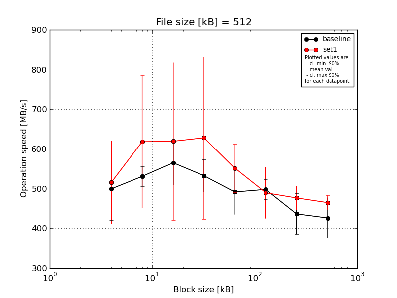
|
File size [kB] |
Block size [kB] |
| 4 |
8 |
16 |
32 |
64 |
128 |
256 |
512 |
| baseline | 512 | 563.02 | 534.74 | 652.75 | 581.44 | 535.29 | 505.48 | 491.62 | 477.95 |
| 512 | 485.92 | 505.0 | 583.38 | 512.27 | 412.27 | 482.13 | 404.25 | 354.62 |
| 512 | 490.24 | 539.42 | 550.61 | 576.65 | 553.66 | 534.2 | 479.37 | 461.24 |
| 512 | 373.97 | 569.44 | 542.91 | 490.7 | 509.66 | 506.58 | 359.24 | 385.52 |
| 512 | 586.98 | 507.07 | 496.51 | 503.06 | 449.67 | 464.3 | 450.44 | 455.03 |
| mean val. |
500.03 |
531.13 |
565.23 |
532.82 |
492.11 |
498.54 |
436.98 |
426.87 |
| standard dev. |
83.24 |
26.51 |
57.93 |
42.92 |
59.45 |
26.58 |
54.95 |
53.65 |
| ci. min. 90% |
420.67 |
505.86 |
510.0 |
491.91 |
435.43 |
473.2 |
384.59 |
375.72 |
| ci. max 90% |
579.38 |
556.41 |
620.46 |
573.74 |
548.79 |
523.88 |
489.37 |
478.02 |
| geom. mean |
494.07 |
530.61 |
562.91 |
531.46 |
489.14 |
497.97 |
434.1 |
424.06 |
| median |
490.24 |
534.74 |
550.61 |
512.27 |
509.66 |
505.48 |
450.44 |
455.03 |
| first quartile |
485.92 |
507.07 |
542.91 |
503.06 |
449.67 |
482.13 |
404.25 |
385.52 |
| third quartile |
563.02 |
539.42 |
583.38 |
576.65 |
535.29 |
506.58 |
479.37 |
461.24 |
| minimum |
373.97 |
505.0 |
496.51 |
490.7 |
412.27 |
464.3 |
359.24 |
354.62 |
| maximum |
586.98 |
569.44 |
652.75 |
581.44 |
553.66 |
534.2 |
491.62 |
477.95 |
| set1 | 512 | 695.39 | 923.93 | 988.38 | 1000.17 | 658.07 | 598.88 | 530.28 | 449.67 |
| 512 | 415.62 | 576.17 | 492.2 | 498.51 | 520.8 | 464.3 | 463.79 | 451.7 |
| 512 | 451.31 | 540.53 | 561.21 | 619.58 | 507.19 | 423.08 | 477.62 | 454.14 |
| 512 | 539.42 | 487.39 | 506.09 | 491.16 | 561.21 | 507.07 | 465.54 | 489.32 |
| 512 | 481.24 | 563.78 | 550.03 | 531.89 | 510.65 | 457.01 | 448.42 | 482.13 |
| mean val. |
516.6 |
618.36 |
619.58 |
628.26 |
551.59 |
490.07 |
477.13 |
465.39 |
| standard dev. |
109.77 |
174.17 |
208.18 |
214.07 |
63.3 |
67.77 |
31.47 |
18.8 |
| ci. min. 90% |
411.94 |
452.31 |
421.1 |
424.17 |
491.24 |
425.46 |
447.12 |
447.47 |
| ci. max 90% |
621.25 |
784.42 |
818.06 |
832.36 |
611.93 |
554.68 |
507.13 |
483.32 |
| geom. mean |
508.09 |
602.0 |
597.26 |
604.47 |
548.88 |
486.53 |
476.33 |
465.09 |
| median |
481.24 |
563.78 |
550.03 |
531.89 |
520.8 |
464.3 |
465.54 |
454.14 |
| first quartile |
451.31 |
540.53 |
506.09 |
498.51 |
510.65 |
457.01 |
463.79 |
451.7 |
| third quartile |
539.42 |
576.17 |
561.21 |
619.58 |
561.21 |
507.07 |
477.62 |
482.13 |
| minimum |
415.62 |
487.39 |
492.2 |
491.16 |
507.19 |
423.08 |
448.42 |
449.67 |
| maximum |
695.39 |
923.93 |
988.38 |
1000.17 |
658.07 |
598.88 |
530.28 |
489.32 |
| baseline set1 difference |
3.31 % |
16.42 % |
9.62 % |
17.91 % |
12.09 % |
-1.7 % |
9.19 % |
9.02 % |
| ttest p-value |
0.7948 |
0.3004 |
0.5892 |
0.357 |
0.1642 |
0.8014 |
0.1941 |
0.1682 |
| ttest equality |
SAME |
SAME |
SAME |
SAME |
SAME |
SAME |
SAME |
SAME |
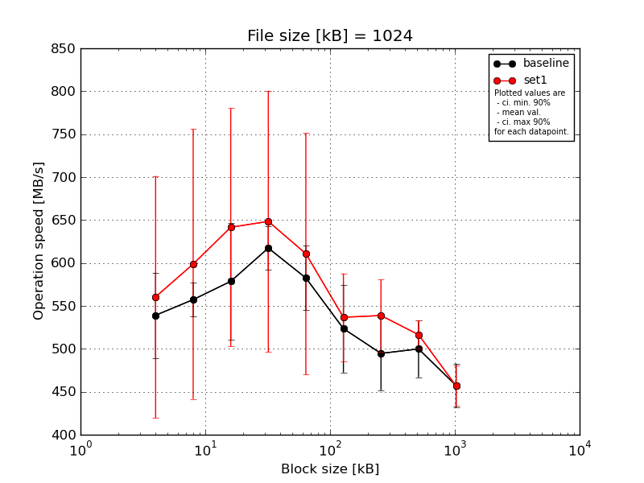
|
File size [kB] |
Block size [kB] |
| 4 |
8 |
16 |
32 |
64 |
128 |
256 |
512 |
1024 |
| baseline | 1024 | 561.13 | 570.13 | 703.17 | 601.35 | 642.73 | 604.56 | 546.72 | 534.18 | 498.8 |
| 1024 | 567.5 | 573.71 | 562.1 | 626.5 | 577.66 | 505.84 | 516.55 | 518.66 | 453.74 |
| 1024 | 597.67 | 559.25 | 556.8 | 657.95 | 594.19 | 548.86 | 514.46 | 517.06 | 464.24 |
| 1024 | 474.37 | 521.37 | 524.89 | 613.13 | 558.66 | 483.28 | 456.21 | 481.01 | 440.54 |
| 1024 | 494.8 | 562.18 | 546.15 | 587.86 | 539.68 | 475.07 | 439.52 | 448.6 | 429.0 |
| mean val. |
539.09 |
557.33 |
578.62 |
617.36 |
582.58 |
523.52 |
494.69 |
499.9 |
457.26 |
| standard dev. |
52.14 |
20.93 |
71.07 |
26.81 |
39.34 |
53.59 |
45.0 |
34.68 |
26.76 |
| ci. min. 90% |
489.38 |
537.37 |
510.87 |
591.8 |
545.08 |
472.43 |
451.79 |
466.84 |
431.75 |
| ci. max 90% |
588.8 |
577.28 |
646.38 |
642.92 |
620.09 |
574.62 |
537.59 |
532.96 |
482.78 |
| geom. mean |
537.04 |
557.0 |
575.43 |
616.9 |
581.54 |
521.4 |
493.03 |
498.91 |
456.65 |
| median |
561.13 |
562.18 |
556.8 |
613.13 |
577.66 |
505.84 |
514.46 |
517.06 |
453.74 |
| first quartile |
494.8 |
559.25 |
546.15 |
601.35 |
558.66 |
483.28 |
456.21 |
481.01 |
440.54 |
| third quartile |
567.5 |
570.13 |
562.1 |
626.5 |
594.19 |
548.86 |
516.55 |
518.66 |
464.24 |
| minimum |
474.37 |
521.37 |
524.89 |
587.86 |
539.68 |
475.07 |
439.52 |
448.6 |
429.0 |
| maximum |
597.67 |
573.71 |
703.17 |
657.95 |
642.73 |
604.56 |
546.72 |
534.18 |
498.8 |
| set1 | 1024 | 822.28 | 888.1 | 897.6 | 929.42 | 872.58 | 627.81 | 612.32 | 544.38 | 477.56 |
| 1024 | 508.35 | 541.7 | 616.1 | 573.4 | 552.77 | 532.76 | 546.15 | 511.76 | 485.91 |
| 1024 | 474.37 | 571.76 | 565.59 | 618.37 | 542.89 | 512.58 | 504.56 | 497.79 | 429.58 |
| 1024 | 521.63 | 492.82 | 546.43 | 583.04 | 567.2 | 488.06 | 514.4 | 514.9 | 453.74 |
| 1024 | 476.15 | 499.51 | 582.07 | 537.88 | 518.4 | 522.47 | 516.55 | 513.58 | 437.64 |
| mean val. |
560.56 |
598.78 |
641.56 |
648.42 |
610.77 |
536.74 |
538.8 |
516.48 |
456.89 |
| standard dev. |
147.73 |
164.9 |
145.4 |
159.68 |
147.43 |
53.54 |
43.94 |
17.03 |
24.47 |
| ci. min. 90% |
419.71 |
441.56 |
502.94 |
496.19 |
470.21 |
485.69 |
496.9 |
500.24 |
433.55 |
| ci. max 90% |
701.4 |
756.0 |
780.18 |
800.66 |
751.33 |
587.78 |
580.69 |
532.72 |
480.22 |
| geom. mean |
547.62 |
583.62 |
630.3 |
635.13 |
598.81 |
534.73 |
537.43 |
516.26 |
456.36 |
| median |
508.35 |
541.7 |
582.07 |
583.04 |
552.77 |
522.47 |
516.55 |
513.58 |
453.74 |
| first quartile |
476.15 |
499.51 |
565.59 |
573.4 |
542.89 |
512.58 |
514.4 |
511.76 |
437.64 |
| third quartile |
521.63 |
571.76 |
616.1 |
618.37 |
567.2 |
532.76 |
546.15 |
514.9 |
477.56 |
| minimum |
474.37 |
492.82 |
546.43 |
537.88 |
518.4 |
488.06 |
504.56 |
497.79 |
429.58 |
| maximum |
822.28 |
888.1 |
897.6 |
929.42 |
872.58 |
627.81 |
612.32 |
544.38 |
485.91 |
| baseline set1 difference |
3.98 % |
7.44 % |
10.88 % |
5.03 % |
4.84 % |
2.52 % |
8.92 % |
3.32 % |
-0.08 % |
| ttest p-value |
0.7672 |
0.5924 |
0.4099 |
0.6792 |
0.6905 |
0.7067 |
0.1555 |
0.3654 |
0.982 |
| ttest equality |
SAME |
SAME |
SAME |
SAME |
SAME |
SAME |
SAME |
SAME |
SAME |
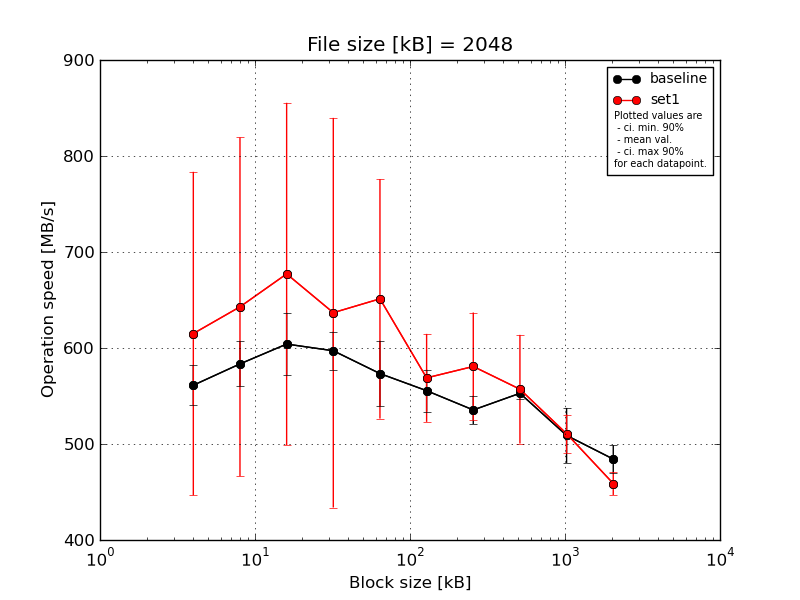
|
File size [kB] |
Block size [kB] |
| 4 |
8 |
16 |
32 |
64 |
128 |
256 |
512 |
1024 |
2048 |
| baseline | 2048 | 598.81 | 581.22 | 663.56 | 622.08 | 614.6 | 581.42 | 557.09 | 557.72 | 548.07 | 486.98 |
| 2048 | 555.4 | 564.02 | 598.25 | 604.77 | 563.04 | 538.77 | 536.05 | 551.24 | 503.67 | 494.33 |
| 2048 | 543.03 | 620.74 | 594.52 | 605.33 | 606.43 | 579.17 | 542.43 | 557.72 | 522.73 | 483.33 |
| 2048 | 554.33 | 559.62 | 580.21 | 567.53 | 532.75 | 534.21 | 518.94 | 553.56 | 466.09 | 497.61 |
| 2048 | 554.48 | 591.55 | 583.93 | 585.97 | 550.04 | 544.08 | 522.76 | 543.91 | 504.01 | 459.13 |
| mean val. |
561.21 |
583.43 |
604.1 |
597.14 |
573.37 |
555.53 |
535.46 |
552.83 |
508.91 |
484.27 |
| standard dev. |
21.63 |
24.53 |
34.05 |
20.91 |
35.69 |
22.89 |
15.42 |
5.71 |
30.04 |
15.16 |
| ci. min. 90% |
540.59 |
560.04 |
571.63 |
577.2 |
539.35 |
533.71 |
520.75 |
547.38 |
480.27 |
469.82 |
| ci. max 90% |
581.83 |
606.82 |
636.56 |
617.07 |
607.39 |
577.35 |
550.16 |
558.28 |
537.55 |
498.73 |
| geom. mean |
560.88 |
583.02 |
603.36 |
596.84 |
572.49 |
555.16 |
535.28 |
552.81 |
508.2 |
484.08 |
| median |
554.48 |
581.22 |
594.52 |
604.77 |
563.04 |
544.08 |
536.05 |
553.56 |
504.01 |
486.98 |
| first quartile |
554.33 |
564.02 |
583.93 |
585.97 |
550.04 |
538.77 |
522.76 |
551.24 |
503.67 |
483.33 |
| third quartile |
555.4 |
591.55 |
598.25 |
605.33 |
606.43 |
579.17 |
542.43 |
557.72 |
522.73 |
494.33 |
| minimum |
543.03 |
559.62 |
580.21 |
567.53 |
532.75 |
534.21 |
518.94 |
543.91 |
466.09 |
459.13 |
| maximum |
598.81 |
620.74 |
663.56 |
622.08 |
614.6 |
581.42 |
557.09 |
557.72 |
548.07 |
497.61 |
| set1 | 2048 | 927.25 | 970.92 | 1008.03 | 993.58 | 884.15 | 648.53 | 673.42 | 659.23 | 534.21 | 468.49 |
| 2048 | 494.44 | 572.06 | 575.04 | 569.96 | 581.42 | 573.23 | 535.3 | 519.07 | 504.52 | 469.82 |
| 2048 | 567.07 | 596.85 | 641.24 | 614.65 | 586.13 | 522.17 | 605.16 | 558.5 | 530.36 | 455.07 |
| 2048 | 531.33 | 540.68 | 575.71 | 421.94 | 589.8 | 551.89 | 538.53 | 530.06 | 498.76 | 439.08 |
| 2048 | 555.1 | 533.9 | 585.84 | 583.77 | 614.65 | 548.57 | 551.45 | 518.56 | 485.68 | 461.68 |
| mean val. |
615.04 |
642.88 |
677.17 |
636.78 |
651.23 |
568.88 |
580.77 |
557.08 |
510.71 |
458.83 |
| standard dev. |
176.72 |
185.11 |
186.96 |
212.85 |
130.84 |
48.08 |
58.93 |
59.36 |
20.89 |
12.51 |
| ci. min. 90% |
446.56 |
466.4 |
498.92 |
433.85 |
526.49 |
523.04 |
524.59 |
500.49 |
490.79 |
446.9 |
| ci. max 90% |
783.52 |
819.37 |
855.42 |
839.71 |
775.97 |
614.72 |
636.95 |
613.68 |
530.63 |
470.76 |
| geom. mean |
598.33 |
625.43 |
660.14 |
611.83 |
642.2 |
567.32 |
578.49 |
554.73 |
510.37 |
458.69 |
| median |
555.1 |
572.06 |
585.84 |
583.77 |
589.8 |
551.89 |
551.45 |
530.06 |
504.52 |
461.68 |
| first quartile |
531.33 |
540.68 |
575.71 |
569.96 |
586.13 |
548.57 |
538.53 |
519.07 |
498.76 |
455.07 |
| third quartile |
567.07 |
596.85 |
641.24 |
614.65 |
614.65 |
573.23 |
605.16 |
558.5 |
530.36 |
468.49 |
| minimum |
494.44 |
533.9 |
575.04 |
421.94 |
581.42 |
522.17 |
535.3 |
518.56 |
485.68 |
439.08 |
| maximum |
927.25 |
970.92 |
1008.03 |
993.58 |
884.15 |
648.53 |
673.42 |
659.23 |
534.21 |
469.82 |
| baseline set1 difference |
9.59 % |
10.19 % |
12.1 % |
6.64 % |
13.58 % |
2.4 % |
8.46 % |
0.77 % |
0.35 % |
-5.25 % |
| ttest p-value |
0.518 |
0.4967 |
0.4149 |
0.6894 |
0.2352 |
0.5905 |
0.1348 |
0.8772 |
0.9154 |
0.0201 |
| ttest equality |
SAME |
SAME |
SAME |
SAME |
SAME |
SAME |
SAME |
SAME |
SAME |
DIFF |

|
File size [kB] |
Block size [kB] |
| 4 |
8 |
16 |
32 |
64 |
128 |
256 |
512 |
1024 |
2048 |
4096 |
| baseline | 4096 | 598.7 | 676.83 | 658.12 | 688.84 | 722.54 | 664.9 | 633.8 | 626.84 | 619.02 | 589.55 | 499.38 |
| 4096 | 559.36 | 605.53 | 627.26 | 643.28 | 636.83 | 601.51 | 621.41 | 617.47 | 610.97 | 570.04 | 462.53 |
| 4096 | 599.79 | 613.7 | 608.73 | 634.93 | 647.05 | 644.76 | 637.34 | 627.05 | 602.22 | 546.69 | 468.27 |
| 4096 | 558.89 | 652.31 | 668.21 | 634.62 | 645.98 | 634.81 | 626.37 | 612.09 | 605.33 | 585.9 | 461.57 |
| 4096 | 538.86 | 595.32 | 621.61 | 606.62 | 659.72 | 604.04 | 598.27 | 579.55 | 601.4 | 552.72 | 451.11 |
| mean val. |
571.12 |
628.74 |
636.79 |
641.66 |
662.42 |
630.0 |
623.44 |
612.6 |
607.79 |
568.98 |
468.57 |
| standard dev. |
26.98 |
34.46 |
25.25 |
29.8 |
34.58 |
27.13 |
15.38 |
19.54 |
7.32 |
19.18 |
18.3 |
| ci. min. 90% |
545.4 |
595.88 |
612.71 |
613.25 |
629.46 |
604.14 |
608.77 |
593.96 |
600.81 |
550.69 |
451.13 |
| ci. max 90% |
596.84 |
661.59 |
660.86 |
670.06 |
695.39 |
655.87 |
638.1 |
631.23 |
614.76 |
587.27 |
486.02 |
| geom. mean |
570.61 |
627.99 |
636.39 |
641.11 |
661.73 |
629.54 |
623.28 |
612.34 |
607.75 |
568.72 |
468.29 |
| median |
559.36 |
613.7 |
627.26 |
634.93 |
647.05 |
634.81 |
626.37 |
617.47 |
605.33 |
570.04 |
462.53 |
| first quartile |
558.89 |
605.53 |
621.61 |
634.62 |
645.98 |
604.04 |
621.41 |
612.09 |
602.22 |
552.72 |
461.57 |
| third quartile |
598.7 |
652.31 |
658.12 |
643.28 |
659.72 |
644.76 |
633.8 |
626.84 |
610.97 |
585.9 |
468.27 |
| minimum |
538.86 |
595.32 |
608.73 |
606.62 |
636.83 |
601.51 |
598.27 |
579.55 |
601.4 |
546.69 |
451.11 |
| maximum |
599.79 |
676.83 |
668.21 |
688.84 |
722.54 |
664.9 |
637.34 |
627.05 |
619.02 |
589.55 |
499.38 |
| set1 | 4096 | 505.63 | 549.82 | 612.0 | 620.26 | 567.86 | 551.79 | 598.36 | 540.25 | 539.45 | 503.64 | 473.81 |
| 4096 | 510.93 | 562.28 | 563.22 | 647.25 | 616.16 | 552.5 | 600.33 | 587.98 | 566.72 | 541.34 | 451.57 |
| 4096 | 562.75 | 575.04 | 639.7 | 685.15 | 649.03 | 581.15 | 638.8 | 658.55 | 628.72 | 550.44 | 439.66 |
| 4096 | 522.8 | 548.55 | 524.95 | 588.06 | 507.28 | 579.95 | 589.71 | 541.2 | 508.39 | 509.62 | 467.23 |
| 4096 | 513.87 | 518.06 | 583.68 | 552.32 | 570.29 | 564.25 | 574.96 | 508.65 | 576.12 | 519.69 | 448.47 |
| mean val. |
523.2 |
550.75 |
584.71 |
618.61 |
582.12 |
565.93 |
600.43 |
567.33 |
563.88 |
524.95 |
456.15 |
| standard dev. |
22.97 |
21.2 |
44.17 |
51.43 |
53.8 |
14.24 |
23.66 |
58.33 |
44.83 |
20.22 |
14.02 |
| ci. min. 90% |
501.29 |
530.54 |
542.6 |
569.58 |
530.83 |
552.35 |
577.87 |
511.72 |
521.14 |
505.67 |
442.78 |
| ci. max 90% |
545.1 |
570.96 |
626.82 |
667.64 |
633.42 |
579.51 |
622.99 |
622.93 |
606.62 |
544.22 |
469.52 |
| geom. mean |
522.81 |
550.42 |
583.36 |
616.89 |
580.11 |
565.79 |
600.06 |
565.02 |
562.47 |
524.64 |
455.98 |
| median |
513.87 |
549.82 |
583.68 |
620.26 |
570.29 |
564.25 |
598.36 |
541.2 |
566.72 |
519.69 |
451.57 |
| first quartile |
510.93 |
548.55 |
563.22 |
588.06 |
567.86 |
552.5 |
589.71 |
540.25 |
539.45 |
509.62 |
448.47 |
| third quartile |
522.8 |
562.28 |
612.0 |
647.25 |
616.16 |
579.95 |
600.33 |
587.98 |
576.12 |
541.34 |
467.23 |
| minimum |
505.63 |
518.06 |
524.95 |
552.32 |
507.28 |
551.79 |
574.96 |
508.65 |
508.39 |
503.64 |
439.66 |
| maximum |
562.75 |
575.04 |
639.7 |
685.15 |
649.03 |
581.15 |
638.8 |
658.55 |
628.72 |
550.44 |
473.81 |
| baseline set1 difference |
-8.39 % |
-12.4 % |
-8.18 % |
-3.59 % |
-12.12 % |
-10.17 % |
-3.69 % |
-7.39 % |
-7.22 % |
-7.74 % |
-2.65 % |
| ttest p-value |
0.0165 |
0.0026 |
0.0514 |
0.4111 |
0.0229 |
0.0016 |
0.1058 |
0.1384 |
0.0626 |
0.0077 |
0.2626 |
| ttest equality |
DIFF |
DIFF |
DIFF |
SAME |
DIFF |
DIFF |
SAME |
SAME |
DIFF |
DIFF |
SAME |
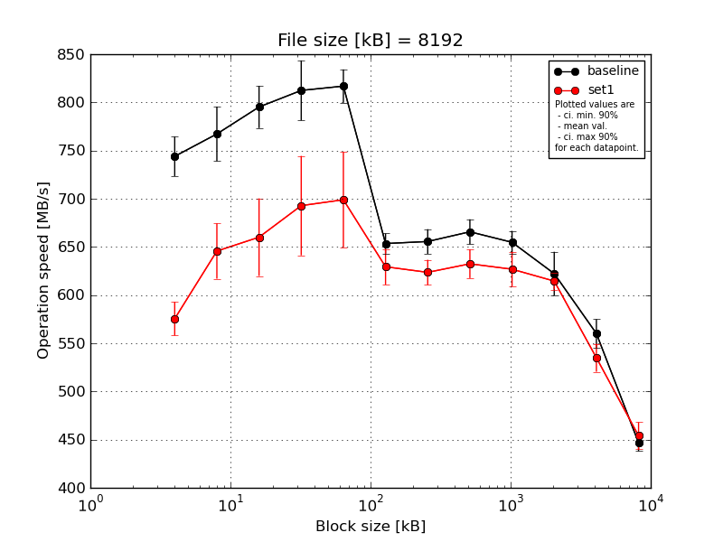
|
File size [kB] |
Block size [kB] |
| 4 |
8 |
16 |
32 |
64 |
128 |
256 |
512 |
1024 |
2048 |
4096 |
8192 |
| baseline | 8192 | 781.39 | 815.76 | 824.9 | 863.38 | 842.72 | 667.62 | 673.07 | 688.88 | 666.66 | 645.16 | 585.87 | 459.95 |
| 8192 | 741.42 | 768.14 | 764.08 | 798.23 | 791.61 | 639.38 | 640.26 | 661.59 | 651.14 | 583.34 | 560.31 | 449.71 |
| 8192 | 730.13 | 762.64 | 800.79 | 823.2 | 816.59 | 652.68 | 663.08 | 664.22 | 655.95 | 618.04 | 555.63 | 448.23 |
| 8192 | 738.0 | 736.17 | 803.86 | 798.8 | 819.42 | 660.12 | 657.13 | 660.82 | 635.67 | 631.16 | 544.15 | 437.25 |
| 8192 | 728.99 | 753.51 | 782.47 | 778.37 | 814.08 | 647.67 | 644.6 | 653.02 | 664.5 | 633.61 | 554.82 | 438.72 |
| mean val. |
743.99 |
767.24 |
795.22 |
812.4 |
816.88 |
653.49 |
655.63 |
665.71 |
654.78 |
622.26 |
560.16 |
446.77 |
| standard dev. |
21.56 |
29.71 |
23.02 |
32.63 |
18.17 |
10.92 |
13.42 |
13.61 |
12.4 |
23.79 |
15.54 |
9.22 |
| ci. min. 90% |
723.43 |
738.92 |
773.28 |
781.28 |
799.56 |
643.08 |
642.84 |
652.73 |
642.96 |
599.58 |
545.34 |
437.98 |
| ci. max 90% |
764.54 |
795.56 |
817.16 |
843.51 |
834.21 |
663.91 |
668.42 |
678.68 |
666.61 |
644.95 |
574.97 |
455.56 |
| geom. mean |
743.74 |
766.79 |
794.95 |
811.88 |
816.72 |
653.42 |
655.52 |
665.6 |
654.69 |
621.89 |
559.99 |
446.7 |
| median |
738.0 |
762.64 |
800.79 |
798.8 |
816.59 |
652.68 |
657.13 |
661.59 |
655.95 |
631.16 |
555.63 |
448.23 |
| first quartile |
730.13 |
753.51 |
782.47 |
798.23 |
814.08 |
647.67 |
644.6 |
660.82 |
651.14 |
618.04 |
554.82 |
438.72 |
| third quartile |
741.42 |
768.14 |
803.86 |
823.2 |
819.42 |
660.12 |
663.08 |
664.22 |
664.5 |
633.61 |
560.31 |
449.71 |
| minimum |
728.99 |
736.17 |
764.08 |
778.37 |
791.61 |
639.38 |
640.26 |
653.02 |
635.67 |
583.34 |
544.15 |
437.25 |
| maximum |
781.39 |
815.76 |
824.9 |
863.38 |
842.72 |
667.62 |
673.07 |
688.88 |
666.66 |
645.16 |
585.87 |
459.95 |
| set1 | 8192 | 595.28 | 676.08 | 596.75 | 716.52 | 754.42 | 649.4 | 628.14 | 657.24 | 628.57 | 618.29 | 550.81 | 439.53 |
| 8192 | 553.13 | 666.33 | 701.08 | 694.21 | 750.26 | 642.51 | 639.95 | 637.0 | 658.77 | 620.11 | 536.12 | 440.04 |
| 8192 | 560.46 | 612.17 | 641.85 | 639.74 | 655.9 | 626.17 | 630.32 | 627.55 | 616.2 | 618.0 | 512.2 | 460.11 |
| 8192 | 578.21 | 659.3 | 692.4 | 769.9 | 691.38 | 629.92 | 605.51 | 617.09 | 619.73 | 598.17 | 546.38 | 474.36 |
| 8192 | 590.41 | 614.59 | 668.39 | 643.86 | 642.77 | 599.03 | 614.06 | 623.49 | 611.06 | 618.05 | 529.34 | 456.0 |
| mean val. |
575.49 |
645.7 |
660.09 |
692.85 |
698.95 |
629.41 |
623.6 |
632.47 |
626.87 |
614.52 |
534.97 |
454.01 |
| standard dev. |
18.35 |
30.11 |
42.24 |
54.13 |
51.91 |
19.4 |
13.7 |
15.61 |
18.94 |
9.18 |
15.27 |
14.66 |
| ci. min. 90% |
558.0 |
616.99 |
619.82 |
641.24 |
649.46 |
610.91 |
610.53 |
617.59 |
608.81 |
605.77 |
520.41 |
440.03 |
| ci. max 90% |
592.99 |
674.4 |
700.37 |
744.45 |
748.43 |
647.9 |
636.66 |
647.36 |
644.93 |
623.28 |
549.52 |
467.99 |
| geom. mean |
575.26 |
645.13 |
658.99 |
691.18 |
697.41 |
629.16 |
623.48 |
632.32 |
626.64 |
614.47 |
534.79 |
453.82 |
| median |
578.21 |
659.3 |
668.39 |
694.21 |
691.38 |
629.92 |
628.14 |
627.55 |
619.73 |
618.05 |
536.12 |
456.0 |
| first quartile |
560.46 |
614.59 |
641.85 |
643.86 |
655.9 |
626.17 |
614.06 |
623.49 |
616.2 |
618.0 |
529.34 |
440.04 |
| third quartile |
590.41 |
666.33 |
692.4 |
716.52 |
750.26 |
642.51 |
630.32 |
637.0 |
628.57 |
618.29 |
546.38 |
460.11 |
| minimum |
553.13 |
612.17 |
596.75 |
639.74 |
642.77 |
599.03 |
605.51 |
617.09 |
611.06 |
598.17 |
512.2 |
439.53 |
| maximum |
595.28 |
676.08 |
701.08 |
769.9 |
754.42 |
649.4 |
639.95 |
657.24 |
658.77 |
620.11 |
550.81 |
474.36 |
| baseline set1 difference |
-22.65 % |
-15.84 % |
-16.99 % |
-14.72 % |
-14.44 % |
-3.69 % |
-4.89 % |
-4.99 % |
-4.26 % |
-1.24 % |
-4.5 % |
1.62 % |
| ttest p-value |
0.0 |
0.0002 |
0.0002 |
0.0029 |
0.0014 |
0.0419 |
0.0057 |
0.0071 |
0.0248 |
0.5167 |
0.0324 |
0.3776 |
| ttest equality |
DIFF |
DIFF |
DIFF |
DIFF |
DIFF |
DIFF |
DIFF |
DIFF |
DIFF |
SAME |
DIFF |
SAME |
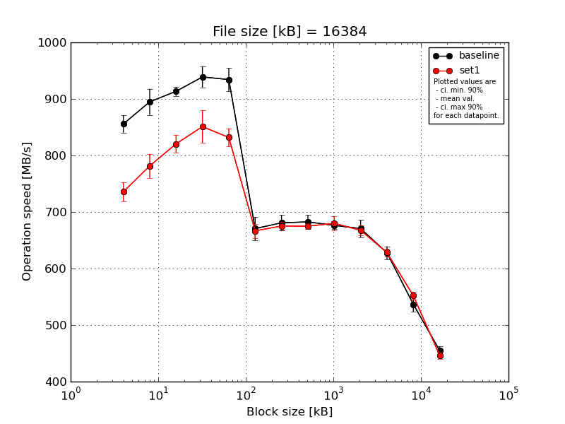
|
File size [kB] |
Block size [kB] |
| 4 |
8 |
16 |
32 |
64 |
128 |
256 |
512 |
1024 |
2048 |
4096 |
8192 |
16384 |
| baseline | 16384 | 882.22 | 931.2 | 912.51 | 969.99 | 952.37 | 708.56 | 704.29 | 694.95 | 685.84 | 668.98 | 619.84 | 544.11 | 456.91 |
| 16384 | 855.01 | 877.15 | 928.13 | 926.52 | 935.57 | 669.18 | 682.68 | 688.47 | 670.95 | 681.75 | 648.35 | 554.55 | 455.96 |
| 16384 | 849.98 | 903.9 | 907.18 | 938.35 | 941.29 | 658.65 | 679.09 | 689.48 | 672.92 | 688.41 | 627.6 | 525.26 | 460.47 |
| 16384 | 852.74 | 891.86 | 909.92 | 919.54 | 944.51 | 657.95 | 672.61 | 663.57 | 669.84 | 667.7 | 619.82 | 520.73 | 459.54 |
| 16384 | 838.62 | 870.18 | 909.77 | 940.13 | 897.71 | 658.82 | 665.89 | 676.05 | 682.13 | 646.93 | 623.66 | 539.14 | 441.49 |
| mean val. |
855.71 |
894.86 |
913.5 |
938.91 |
934.29 |
670.63 |
680.91 |
682.5 |
676.34 |
670.75 |
627.85 |
536.76 |
454.87 |
| standard dev. |
16.1 |
24.16 |
8.39 |
19.34 |
21.33 |
21.71 |
14.56 |
12.64 |
7.19 |
15.91 |
11.9 |
13.83 |
7.71 |
| ci. min. 90% |
840.36 |
871.83 |
905.5 |
920.47 |
913.95 |
649.94 |
667.03 |
670.45 |
669.48 |
655.59 |
616.51 |
523.57 |
447.53 |
| ci. max 90% |
871.07 |
917.89 |
921.5 |
957.35 |
954.63 |
691.32 |
694.79 |
694.56 |
683.19 |
685.92 |
639.2 |
549.95 |
462.22 |
| geom. mean |
855.59 |
894.6 |
913.47 |
938.75 |
934.09 |
670.36 |
680.79 |
682.41 |
676.31 |
670.6 |
627.77 |
536.62 |
454.82 |
| median |
852.74 |
891.86 |
909.92 |
938.35 |
941.29 |
658.82 |
679.09 |
688.47 |
672.92 |
668.98 |
623.66 |
539.14 |
456.91 |
| first quartile |
849.98 |
877.15 |
909.77 |
926.52 |
935.57 |
658.65 |
672.61 |
676.05 |
670.95 |
667.7 |
619.84 |
525.26 |
455.96 |
| third quartile |
855.01 |
903.9 |
912.51 |
940.13 |
944.51 |
669.18 |
682.68 |
689.48 |
682.13 |
681.75 |
627.6 |
544.11 |
459.54 |
| minimum |
838.62 |
870.18 |
907.18 |
919.54 |
897.71 |
657.95 |
665.89 |
663.57 |
669.84 |
646.93 |
619.82 |
520.73 |
441.49 |
| maximum |
882.22 |
931.2 |
928.13 |
969.99 |
952.37 |
708.56 |
704.29 |
694.95 |
685.84 |
688.41 |
648.35 |
554.55 |
460.47 |
| set1 | 16384 | 746.86 | 780.95 | 807.35 | 890.72 | 838.14 | 673.12 | 669.06 | 676.62 | 698.42 | 656.73 | 635.75 | 557.04 | 444.26 |
| 16384 | 725.56 | 772.91 | 830.22 | 825.67 | 818.07 | 656.89 | 675.08 | 673.34 | 674.74 | 665.5 | 633.21 | 543.44 | 446.85 |
| 16384 | 760.17 | 802.84 | 821.74 | 824.54 | 858.73 | 685.78 | 687.76 | 678.08 | 670.66 | 667.52 | 617.62 | 545.59 | 456.57 |
| 16384 | 717.3 | 748.86 | 801.65 | 874.7 | 823.59 | 663.93 | 670.78 | 666.05 | 667.14 | 667.23 | 623.76 | 561.38 | 444.57 |
| 16384 | 728.76 | 801.84 | 842.16 | 839.28 | 821.23 | 653.33 | 673.62 | 680.07 | 689.27 | 681.17 | 630.74 | 552.24 | 439.79 |
| mean val. |
735.73 |
781.48 |
820.62 |
850.98 |
831.95 |
666.61 |
675.26 |
674.83 |
680.05 |
667.63 |
628.22 |
551.94 |
446.41 |
| standard dev. |
17.41 |
22.41 |
16.53 |
30.08 |
16.83 |
13.11 |
7.37 |
5.49 |
13.28 |
8.76 |
7.42 |
7.55 |
6.23 |
| ci. min. 90% |
719.13 |
760.11 |
804.86 |
822.31 |
815.91 |
654.11 |
668.23 |
669.6 |
667.38 |
659.28 |
621.14 |
544.74 |
440.47 |
| ci. max 90% |
752.33 |
802.84 |
836.38 |
879.66 |
848.0 |
679.11 |
682.29 |
680.07 |
692.71 |
675.98 |
635.29 |
559.13 |
452.35 |
| geom. mean |
735.56 |
781.22 |
820.49 |
850.56 |
831.82 |
666.51 |
675.23 |
674.82 |
679.94 |
667.59 |
628.18 |
551.9 |
446.37 |
| median |
728.76 |
780.95 |
821.74 |
839.28 |
823.59 |
663.93 |
673.62 |
676.62 |
674.74 |
667.23 |
630.74 |
552.24 |
444.57 |
| first quartile |
725.56 |
772.91 |
807.35 |
825.67 |
821.23 |
656.89 |
670.78 |
673.34 |
670.66 |
665.5 |
623.76 |
545.59 |
444.26 |
| third quartile |
746.86 |
801.84 |
830.22 |
874.7 |
838.14 |
673.12 |
675.08 |
678.08 |
689.27 |
667.52 |
633.21 |
557.04 |
446.85 |
| minimum |
717.3 |
748.86 |
801.65 |
824.54 |
818.07 |
653.33 |
669.06 |
666.05 |
667.14 |
656.73 |
617.62 |
543.44 |
439.79 |
| maximum |
760.17 |
802.84 |
842.16 |
890.72 |
858.73 |
685.78 |
687.76 |
680.07 |
698.42 |
681.17 |
635.75 |
561.38 |
456.57 |
| baseline set1 difference |
-14.02 % |
-12.67 % |
-10.17 % |
-9.36 % |
-10.95 % |
-0.6 % |
-0.83 % |
-1.12 % |
0.55 % |
-0.47 % |
0.06 % |
2.83 % |
-1.86 % |
| ttest p-value |
0.0 |
0.0001 |
0.0 |
0.0006 |
0.0 |
0.732 |
0.461 |
0.2485 |
0.5979 |
0.7105 |
0.9556 |
0.0634 |
0.0925 |
| ttest equality |
DIFF |
DIFF |
DIFF |
DIFF |
DIFF |
SAME |
SAME |
SAME |
SAME |
SAME |
SAME |
DIFF |
DIFF |
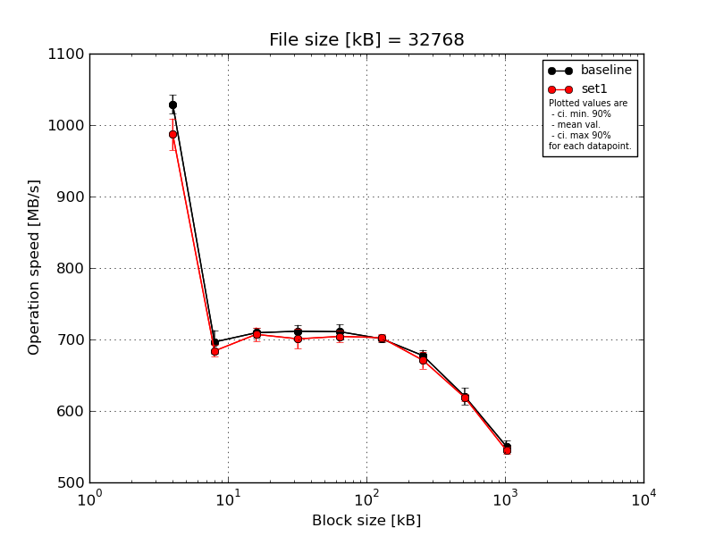
|
File size [kB] |
Block size [kB] |
| 64 |
128 |
256 |
512 |
1024 |
2048 |
4096 |
8192 |
16384 |
| baseline | 32768 | 1009.81 | 725.76 | 719.5 | 721.27 | 727.12 | 709.03 | 682.2 | 606.79 | 556.92 |
| 32768 | 1047.87 | 684.71 | 709.98 | 719.62 | 715.79 | 703.39 | 685.84 | 626.15 | 554.89 |
| 32768 | 1034.36 | 697.08 | 706.76 | 712.28 | 700.63 | 697.55 | 682.11 | 635.07 | 558.1 |
| 32768 | 1028.11 | 691.37 | 700.65 | 702.59 | 705.81 | 697.52 | 668.2 | 607.98 | 541.48 |
| 32768 | 1024.69 | 683.6 | 710.38 | 701.77 | 705.09 | 697.96 | 668.5 | 626.47 | 540.64 |
| mean val. |
1028.97 |
696.5 |
709.45 |
711.51 |
710.89 |
701.09 |
677.37 |
620.49 |
550.41 |
| standard dev. |
13.9 |
17.23 |
6.84 |
9.17 |
10.63 |
5.09 |
8.37 |
12.5 |
8.61 |
| ci. min. 90% |
1015.72 |
680.07 |
702.94 |
702.77 |
700.75 |
696.24 |
669.39 |
608.58 |
542.2 |
| ci. max 90% |
1042.22 |
712.93 |
715.97 |
720.25 |
721.02 |
705.94 |
685.35 |
632.4 |
558.62 |
| geom. mean |
1028.89 |
696.33 |
709.43 |
711.46 |
710.82 |
701.07 |
677.33 |
620.39 |
550.35 |
| median |
1028.11 |
691.37 |
709.98 |
712.28 |
705.81 |
697.96 |
682.11 |
626.15 |
554.89 |
| first quartile |
1024.69 |
684.71 |
706.76 |
702.59 |
705.09 |
697.55 |
668.5 |
607.98 |
541.48 |
| third quartile |
1034.36 |
697.08 |
710.38 |
719.62 |
715.79 |
703.39 |
682.2 |
626.47 |
556.92 |
| minimum |
1009.81 |
683.6 |
700.65 |
701.77 |
700.63 |
697.52 |
668.2 |
606.79 |
540.64 |
| maximum |
1047.87 |
725.76 |
719.5 |
721.27 |
727.12 |
709.03 |
685.84 |
635.07 |
558.1 |
| set1 | 32768 | 998.69 | 692.13 | 712.96 | 695.08 | 716.89 | 697.62 | 678.87 | 616.48 | 551.55 |
| 32768 | 951.76 | 684.7 | 717.17 | 689.62 | 702.92 | 705.93 | 651.07 | 612.45 | 542.44 |
| 32768 | 975.37 | 692.43 | 708.61 | 717.71 | 693.86 | 697.99 | 675.44 | 624.41 | 548.0 |
| 32768 | 1000.56 | 673.93 | 690.67 | 687.51 | 699.59 | 701.2 | 666.72 | 617.48 | 537.8 |
| 32768 | 1008.35 | 676.42 | 706.35 | 714.41 | 707.95 | 710.09 | 682.29 | 623.85 | 544.75 |
| mean val. |
986.94 |
683.92 |
707.15 |
700.87 |
704.24 |
702.57 |
670.88 |
618.94 |
544.91 |
| standard dev. |
23.2 |
8.61 |
10.11 |
14.19 |
8.73 |
5.37 |
12.5 |
5.11 |
5.25 |
| ci. min. 90% |
964.82 |
675.71 |
697.52 |
687.34 |
695.92 |
697.45 |
658.96 |
614.07 |
539.9 |
| ci. max 90% |
1009.06 |
692.13 |
716.79 |
714.4 |
712.57 |
707.68 |
682.79 |
623.81 |
549.92 |
| geom. mean |
986.72 |
683.88 |
707.09 |
700.75 |
704.2 |
702.55 |
670.78 |
618.92 |
544.89 |
| median |
998.69 |
684.7 |
708.61 |
695.08 |
702.92 |
701.2 |
675.44 |
617.48 |
544.75 |
| first quartile |
975.37 |
676.42 |
706.35 |
689.62 |
699.59 |
697.99 |
666.72 |
616.48 |
542.44 |
| third quartile |
1000.56 |
692.13 |
712.96 |
714.41 |
707.95 |
705.93 |
678.87 |
623.85 |
548.0 |
| minimum |
951.76 |
673.93 |
690.67 |
687.51 |
693.86 |
697.62 |
651.07 |
612.45 |
537.8 |
| maximum |
1008.35 |
692.43 |
717.17 |
717.71 |
716.89 |
710.09 |
682.29 |
624.41 |
551.55 |
| baseline set1 difference |
-4.08 % |
-1.81 % |
-0.32 % |
-1.5 % |
-0.93 % |
0.21 % |
-0.96 % |
-0.25 % |
-1.0 % |
| ttest p-value |
0.0084 |
0.1823 |
0.6841 |
0.1968 |
0.3117 |
0.6671 |
0.3626 |
0.8032 |
0.2577 |
| ttest equality |
DIFF |
SAME |
SAME |
SAME |
SAME |
SAME |
SAME |
SAME |
SAME |
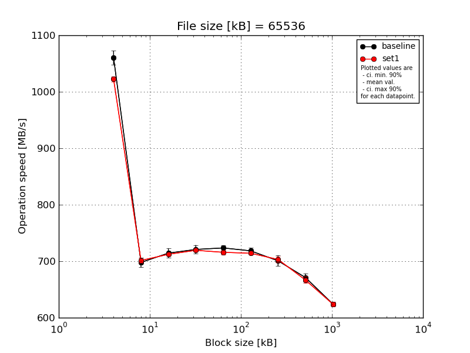
|
File size [kB] |
Block size [kB] |
| 64 |
128 |
256 |
512 |
1024 |
2048 |
4096 |
8192 |
16384 |
| baseline | 65536 | 1072.76 | 710.64 | 724.29 | 727.46 | 724.38 | 720.81 | 709.27 | 673.17 | 617.42 |
| 65536 | 1064.49 | 695.38 | 721.18 | 720.19 | 725.99 | 716.28 | 707.74 | 675.7 | 626.06 |
| 65536 | 1061.57 | 701.73 | 711.32 | 724.26 | 726.16 | 726.32 | 704.89 | 679.56 | 627.54 |
| 65536 | 1038.86 | 686.33 | 702.49 | 707.02 | 714.67 | 710.87 | 685.57 | 661.34 | 623.48 |
| 65536 | 1064.5 | 695.21 | 712.58 | 725.32 | 726.48 | 717.57 | 696.19 | 665.82 | 626.94 |
| mean val. |
1060.44 |
697.86 |
714.37 |
720.85 |
723.53 |
718.37 |
700.73 |
671.12 |
624.29 |
| standard dev. |
12.77 |
9.01 |
8.64 |
8.17 |
5.02 |
5.71 |
9.87 |
7.42 |
4.14 |
| ci. min. 90% |
1048.27 |
689.27 |
706.13 |
713.06 |
718.75 |
712.93 |
691.32 |
664.05 |
620.34 |
| ci. max 90% |
1072.61 |
706.45 |
722.61 |
728.64 |
728.32 |
723.82 |
710.15 |
678.19 |
628.23 |
| geom. mean |
1060.37 |
697.81 |
714.33 |
720.81 |
723.52 |
718.35 |
700.68 |
671.08 |
624.28 |
| median |
1064.49 |
695.38 |
712.58 |
724.26 |
725.99 |
717.57 |
704.89 |
673.17 |
626.06 |
| first quartile |
1061.57 |
695.21 |
711.32 |
720.19 |
724.38 |
716.28 |
696.19 |
665.82 |
623.48 |
| third quartile |
1064.5 |
701.73 |
721.18 |
725.32 |
726.16 |
720.81 |
707.74 |
675.7 |
626.94 |
| minimum |
1038.86 |
686.33 |
702.49 |
707.02 |
714.67 |
710.87 |
685.57 |
661.34 |
617.42 |
| maximum |
1072.76 |
710.64 |
724.29 |
727.46 |
726.48 |
726.32 |
709.27 |
679.56 |
627.54 |
| set1 | 65536 | 1028.92 | 706.73 | 714.29 | 718.5 | 720.45 | 711.26 | 711.81 | 666.33 | 619.9 |
| 65536 | 1025.92 | 697.12 | 708.67 | 722.18 | 717.42 | 712.04 | 702.96 | 670.8 | 625.92 |
| 65536 | 1019.45 | 704.87 | 712.12 | 717.47 | 718.15 | 718.53 | 700.17 | 673.37 | 628.43 |
| 65536 | 1017.36 | 700.95 | 715.34 | 716.56 | 712.82 | 714.9 | 699.21 | 657.83 | 627.03 |
| 65536 | 1020.8 | 697.13 | 710.64 | 722.01 | 710.0 | 713.85 | 701.48 | 665.38 | 618.64 |
| mean val. |
1022.49 |
701.36 |
712.21 |
719.34 |
715.77 |
714.12 |
703.13 |
666.74 |
623.99 |
| standard dev. |
4.78 |
4.39 |
2.7 |
2.61 |
4.25 |
2.85 |
5.05 |
5.96 |
4.42 |
| ci. min. 90% |
1017.93 |
697.17 |
709.64 |
716.86 |
711.71 |
711.39 |
698.31 |
661.06 |
619.77 |
| ci. max 90% |
1027.05 |
705.55 |
714.78 |
721.83 |
719.82 |
716.84 |
707.94 |
672.42 |
628.2 |
| geom. mean |
1022.48 |
701.35 |
712.21 |
719.34 |
715.76 |
714.11 |
703.11 |
666.72 |
623.97 |
| median |
1020.8 |
700.95 |
712.12 |
718.5 |
717.42 |
713.85 |
701.48 |
666.33 |
625.92 |
| first quartile |
1019.45 |
697.13 |
710.64 |
717.47 |
712.82 |
712.04 |
700.17 |
665.38 |
619.9 |
| third quartile |
1025.92 |
704.87 |
714.29 |
722.01 |
718.15 |
714.9 |
702.96 |
670.8 |
627.03 |
| minimum |
1017.36 |
697.12 |
708.67 |
716.56 |
710.0 |
711.26 |
699.21 |
657.83 |
618.64 |
| maximum |
1028.92 |
706.73 |
715.34 |
722.18 |
720.45 |
718.53 |
711.81 |
673.37 |
628.43 |
| baseline set1 difference |
-3.58 % |
0.5 % |
-0.3 % |
-0.21 % |
-1.07 % |
-0.59 % |
0.34 % |
-0.65 % |
-0.05 % |
| ttest p-value |
0.0003 |
0.4571 |
0.6082 |
0.7051 |
0.0298 |
0.1743 |
0.6423 |
0.3337 |
0.914 |
| ttest equality |
DIFF |
SAME |
SAME |
SAME |
DIFF |
SAME |
SAME |
SAME |
SAME |
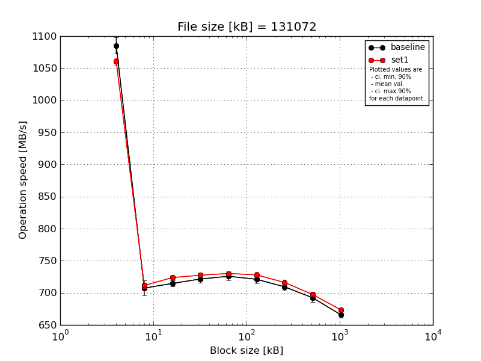
|
File size [kB] |
Block size [kB] |
| 64 |
128 |
256 |
512 |
1024 |
2048 |
4096 |
8192 |
16384 |
| baseline | 131072 | 1109.28 | 724.28 | 722.24 | 724.66 | 732.47 | 728.37 | 714.95 | 701.52 | 670.31 |
| 131072 | 1080.08 | 704.88 | 710.71 | 725.13 | 719.02 | 725.11 | 702.97 | 691.77 | 661.51 |
| 131072 | 1078.43 | 701.54 | 716.26 | 717.87 | 722.64 | 722.41 | 707.9 | 692.2 | 672.34 |
| 131072 | 1082.6 | 713.63 | 711.22 | 728.29 | 721.58 | 712.59 | 716.77 | 693.21 | 663.35 |
| 131072 | 1076.91 | 692.49 | 712.5 | 711.79 | 733.01 | 717.11 | 703.95 | 682.92 | 662.43 |
| mean val. |
1085.46 |
707.36 |
714.59 |
721.55 |
725.74 |
721.12 |
709.31 |
692.32 |
665.99 |
| standard dev. |
13.48 |
12.11 |
4.8 |
6.65 |
6.52 |
6.31 |
6.3 |
6.6 |
4.97 |
| ci. min. 90% |
1072.61 |
695.81 |
710.01 |
715.21 |
719.53 |
715.1 |
703.31 |
686.03 |
661.25 |
| ci. max 90% |
1098.31 |
718.91 |
719.16 |
727.89 |
731.96 |
727.13 |
715.31 |
698.62 |
670.73 |
| geom. mean |
1085.39 |
707.28 |
714.57 |
721.53 |
725.72 |
721.09 |
709.28 |
692.3 |
665.97 |
| median |
1080.08 |
704.88 |
712.5 |
724.66 |
722.64 |
722.41 |
707.9 |
692.2 |
663.35 |
| first quartile |
1078.43 |
701.54 |
711.22 |
717.87 |
721.58 |
717.11 |
703.95 |
691.77 |
662.43 |
| third quartile |
1082.6 |
713.63 |
716.26 |
725.13 |
732.47 |
725.11 |
714.95 |
693.21 |
670.31 |
| minimum |
1076.91 |
692.49 |
710.71 |
711.79 |
719.02 |
712.59 |
702.97 |
682.92 |
661.51 |
| maximum |
1109.28 |
724.28 |
722.24 |
728.29 |
733.01 |
728.37 |
716.77 |
701.52 |
672.34 |
| set1 | 131072 | 1060.05 | 715.99 | 728.5 | 731.21 | 733.39 | 732.75 | 711.73 | 698.21 | 672.93 |
| 131072 | 1055.0 | 707.83 | 721.77 | 724.15 | 725.04 | 722.5 | 716.31 | 691.89 | 672.21 |
| 131072 | 1055.58 | 716.03 | 721.43 | 731.44 | 730.31 | 731.08 | 722.99 | 700.1 | 672.8 |
| 131072 | 1067.19 | 707.9 | 721.24 | 723.96 | 729.11 | 724.98 | 717.96 | 702.0 | 676.6 |
| 131072 | 1063.93 | 710.18 | 725.33 | 726.82 | 732.43 | 729.21 | 711.31 | 695.17 | 673.13 |
| mean val. |
1060.35 |
711.58 |
723.65 |
727.52 |
730.06 |
728.1 |
716.06 |
697.48 |
673.53 |
| standard dev. |
5.27 |
4.15 |
3.19 |
3.66 |
3.28 |
4.27 |
4.82 |
4.01 |
1.75 |
| ci. min. 90% |
1055.33 |
707.63 |
720.62 |
724.03 |
726.93 |
724.03 |
711.46 |
693.65 |
671.87 |
| ci. max 90% |
1065.38 |
715.54 |
726.69 |
731.0 |
733.18 |
732.17 |
720.66 |
701.3 |
675.2 |
| geom. mean |
1060.34 |
711.58 |
723.65 |
727.51 |
730.05 |
728.09 |
716.05 |
697.47 |
673.53 |
| median |
1060.05 |
710.18 |
721.77 |
726.82 |
730.31 |
729.21 |
716.31 |
698.21 |
672.93 |
| first quartile |
1055.58 |
707.9 |
721.43 |
724.15 |
729.11 |
724.98 |
711.73 |
695.17 |
672.8 |
| third quartile |
1063.93 |
715.99 |
725.33 |
731.21 |
732.43 |
731.08 |
717.96 |
700.1 |
673.13 |
| minimum |
1055.0 |
707.83 |
721.24 |
723.96 |
725.04 |
722.5 |
711.31 |
691.89 |
672.21 |
| maximum |
1067.19 |
716.03 |
728.5 |
731.44 |
733.39 |
732.75 |
722.99 |
702.0 |
676.6 |
| baseline set1 difference |
-2.31 % |
0.6 % |
1.27 % |
0.83 % |
0.59 % |
0.97 % |
0.95 % |
0.74 % |
1.13 % |
| ttest p-value |
0.0047 |
0.482 |
0.0078 |
0.1169 |
0.2229 |
0.0743 |
0.0933 |
0.1742 |
0.0125 |
| ttest equality |
DIFF |
SAME |
DIFF |
SAME |
SAME |
DIFF |
DIFF |
SAME |
DIFF |
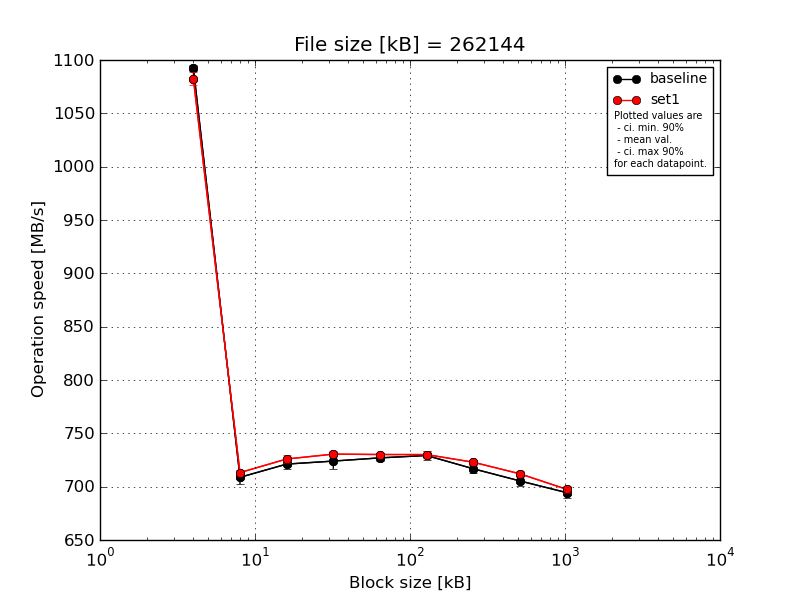
|
File size [kB] |
Block size [kB] |
| 64 |
128 |
256 |
512 |
1024 |
2048 |
4096 |
8192 |
16384 |
| baseline | 262144 | 1094.56 | 717.24 | 729.17 | 731.75 | 732.09 | 731.38 | 722.43 | 712.68 | 697.84 |
| 262144 | 1095.26 | 708.89 | 722.3 | 725.94 | 727.92 | 734.15 | 716.15 | 708.29 | 698.17 |
| 262144 | 1092.82 | 713.93 | 721.16 | 727.61 | 724.32 | 730.33 | 717.58 | 703.34 | 697.45 |
| 262144 | 1088.16 | 700.84 | 717.01 | 711.38 | 725.98 | 724.6 | 710.93 | 700.22 | 685.0 |
| 262144 | 1092.96 | 702.96 | 716.17 | 723.23 | 724.69 | 725.65 | 716.86 | 702.35 | 693.7 |
| mean val. |
1092.75 |
708.77 |
721.16 |
723.98 |
727.0 |
729.22 |
716.79 |
705.38 |
694.43 |
| standard dev. |
2.77 |
6.98 |
5.18 |
7.69 |
3.17 |
4.01 |
4.1 |
5.04 |
5.57 |
| ci. min. 90% |
1090.11 |
702.12 |
716.22 |
716.65 |
723.97 |
725.4 |
712.88 |
700.57 |
689.12 |
| ci. max 90% |
1095.39 |
715.43 |
726.11 |
731.31 |
730.02 |
733.04 |
720.7 |
710.19 |
699.75 |
| geom. mean |
1092.75 |
708.75 |
721.15 |
723.95 |
726.99 |
729.21 |
716.78 |
705.36 |
694.41 |
| median |
1092.96 |
708.89 |
721.16 |
725.94 |
725.98 |
730.33 |
716.86 |
703.34 |
697.45 |
| first quartile |
1092.82 |
702.96 |
717.01 |
723.23 |
724.69 |
725.65 |
716.15 |
702.35 |
693.7 |
| third quartile |
1094.56 |
713.93 |
722.3 |
727.61 |
727.92 |
731.38 |
717.58 |
708.29 |
697.84 |
| minimum |
1088.16 |
700.84 |
716.17 |
711.38 |
724.32 |
724.6 |
710.93 |
700.22 |
685.0 |
| maximum |
1095.26 |
717.24 |
729.17 |
731.75 |
732.09 |
734.15 |
722.43 |
712.68 |
698.17 |
| set1 | 262144 | 1087.36 | 714.32 | 730.93 | 731.89 | 729.68 | 733.09 | 724.11 | 715.25 | 702.56 |
| 262144 | 1075.32 | 712.53 | 725.49 | 732.71 | 730.65 | 734.46 | 721.32 | 713.63 | 693.8 |
| 262144 | 1081.05 | 714.39 | 726.66 | 725.3 | 730.99 | 726.62 | 720.32 | 707.52 | 697.96 |
| 262144 | 1078.9 | 713.45 | 725.69 | 730.66 | 729.34 | 727.76 | 726.0 | 713.0 | 698.15 |
| 262144 | 1090.6 | 711.33 | 720.85 | 731.99 | 730.04 | 728.42 | 722.82 | 710.91 | 695.28 |
| mean val. |
1082.65 |
713.2 |
725.92 |
730.51 |
730.14 |
730.07 |
722.92 |
712.06 |
697.55 |
| standard dev. |
6.24 |
1.29 |
3.59 |
3.0 |
0.68 |
3.48 |
2.25 |
2.98 |
3.35 |
| ci. min. 90% |
1076.7 |
711.97 |
722.5 |
727.65 |
729.49 |
726.76 |
720.77 |
709.22 |
694.36 |
| ci. max 90% |
1088.6 |
714.43 |
729.35 |
733.37 |
730.79 |
733.39 |
725.06 |
714.9 |
700.74 |
| geom. mean |
1082.63 |
713.2 |
725.92 |
730.51 |
730.14 |
730.06 |
722.91 |
712.06 |
697.54 |
| median |
1081.05 |
713.45 |
725.69 |
731.89 |
730.04 |
728.42 |
722.82 |
713.0 |
697.96 |
| first quartile |
1078.9 |
712.53 |
725.49 |
730.66 |
729.68 |
727.76 |
721.32 |
710.91 |
695.28 |
| third quartile |
1087.36 |
714.32 |
726.66 |
731.99 |
730.65 |
733.09 |
724.11 |
713.63 |
698.15 |
| minimum |
1075.32 |
711.33 |
720.85 |
725.3 |
729.34 |
726.62 |
720.32 |
707.52 |
693.8 |
| maximum |
1090.6 |
714.39 |
730.93 |
732.71 |
730.99 |
734.46 |
726.0 |
715.25 |
702.56 |
| baseline set1 difference |
-0.92 % |
0.63 % |
0.66 % |
0.9 % |
0.43 % |
0.12 % |
0.85 % |
0.95 % |
0.45 % |
| ttest p-value |
0.0107 |
0.2005 |
0.1297 |
0.115 |
0.0623 |
0.7302 |
0.0191 |
0.0341 |
0.3148 |
| ttest equality |
DIFF |
SAME |
SAME |
SAME |
DIFF |
SAME |
DIFF |
DIFF |
SAME |
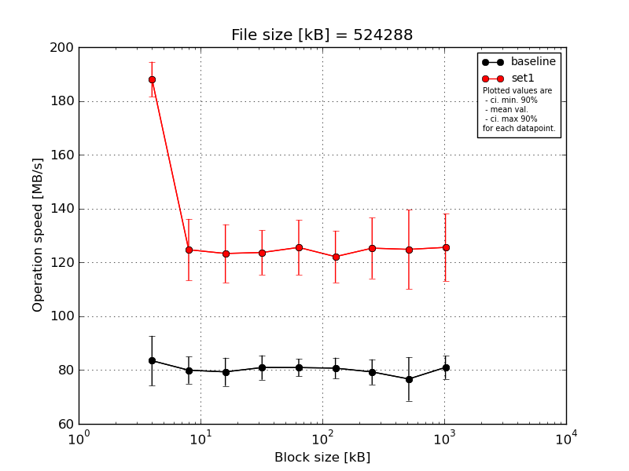
|
File size [kB] |
Block size [kB] |
| 64 |
128 |
256 |
512 |
1024 |
2048 |
4096 |
8192 |
16384 |
| baseline | 524288 | 77.23 | 70.92 | 74.88 | 73.44 | 75.04 | 74.17 | 73.55 | 72.88 | 73.46 |
| 524288 | 92.17 | 83.69 | 83.04 | 85.39 | 83.37 | 84.98 | 84.76 | 84.58 | 84.01 |
| 524288 | 70.56 | 83.39 | 85.49 | 83.51 | 82.38 | 82.34 | 74.76 | 63.77 | 84.87 |
| 524288 | 84.33 | 81.66 | 72.46 | 83.16 | 83.02 | 82.11 | 82.5 | 82.97 | 82.14 |
| 524288 | 93.13 | 80.11 | 80.78 | 79.26 | 80.83 | 80.05 | 80.99 | 79.3 | 80.56 |
| mean val. |
83.49 |
79.96 |
79.33 |
80.95 |
80.93 |
80.73 |
79.31 |
76.7 |
81.01 |
| standard dev. |
9.69 |
5.25 |
5.49 |
4.75 |
3.43 |
4.06 |
4.91 |
8.51 |
4.54 |
| ci. min. 90% |
74.25 |
74.95 |
74.09 |
76.42 |
77.65 |
76.85 |
74.62 |
68.59 |
76.68 |
| ci. max 90% |
92.72 |
84.96 |
84.57 |
85.48 |
84.2 |
84.6 |
83.99 |
84.81 |
85.34 |
| geom. mean |
83.03 |
79.81 |
79.18 |
80.84 |
80.87 |
80.64 |
79.19 |
76.3 |
80.9 |
| median |
84.33 |
81.66 |
80.78 |
83.16 |
82.38 |
82.11 |
80.99 |
79.3 |
82.14 |
| first quartile |
77.23 |
80.11 |
74.88 |
79.26 |
80.83 |
80.05 |
74.76 |
72.88 |
80.56 |
| third quartile |
92.17 |
83.39 |
83.04 |
83.51 |
83.02 |
82.34 |
82.5 |
82.97 |
84.01 |
| minimum |
70.56 |
70.92 |
72.46 |
73.44 |
75.04 |
74.17 |
73.55 |
63.77 |
73.46 |
| maximum |
93.13 |
83.69 |
85.49 |
85.39 |
83.37 |
84.98 |
84.76 |
84.58 |
84.87 |
| set1 | 524288 | 179.38 | 104.52 | 103.25 | 108.72 | 107.83 | 104.71 | 105.39 | 104.08 | 106.67 |
| 524288 | 188.12 | 127.01 | 128.82 | 127.55 | 132.25 | 128.51 | 129.87 | 125.44 | 128.53 |
| 524288 | 184.83 | 125.74 | 126.53 | 123.83 | 124.91 | 122.59 | 126.04 | 124.58 | 125.27 |
| 524288 | 197.78 | 130.2 | 126.98 | 129.74 | 127.88 | 125.59 | 128.48 | 122.49 | 124.01 |
| 524288 | 190.28 | 136.16 | 131.01 | 128.6 | 134.99 | 129.31 | 136.72 | 147.66 | 143.48 |
| mean val. |
188.08 |
124.73 |
123.32 |
123.69 |
125.57 |
122.15 |
125.3 |
124.85 |
125.59 |
| standard dev. |
6.8 |
11.99 |
11.36 |
8.66 |
10.65 |
10.1 |
11.81 |
15.47 |
13.12 |
| ci. min. 90% |
181.59 |
113.29 |
112.49 |
115.43 |
115.42 |
112.52 |
114.04 |
110.1 |
113.08 |
| ci. max 90% |
194.56 |
136.16 |
134.15 |
131.94 |
135.73 |
131.77 |
136.57 |
139.6 |
138.11 |
| geom. mean |
187.98 |
124.23 |
122.86 |
123.43 |
125.19 |
121.79 |
124.83 |
124.09 |
125.03 |
| median |
188.12 |
127.01 |
126.98 |
127.55 |
127.88 |
125.59 |
128.48 |
124.58 |
125.27 |
| first quartile |
184.83 |
125.74 |
126.53 |
123.83 |
124.91 |
122.59 |
126.04 |
122.49 |
124.01 |
| third quartile |
190.28 |
130.2 |
128.82 |
128.6 |
132.25 |
128.51 |
129.87 |
125.44 |
128.53 |
| minimum |
179.38 |
104.52 |
103.25 |
108.72 |
107.83 |
104.71 |
105.39 |
104.08 |
106.67 |
| maximum |
197.78 |
136.16 |
131.01 |
129.74 |
134.99 |
129.31 |
136.72 |
147.66 |
143.48 |
| baseline set1 difference |
125.28 % |
55.99 % |
55.45 % |
52.79 % |
55.17 % |
51.3 % |
57.99 % |
62.78 % |
55.04 % |
| ttest p-value |
0.0 |
0.0001 |
0.0001 |
0.0 |
0.0 |
0.0 |
0.0 |
0.0003 |
0.0001 |
| ttest equality |
DIFF |
DIFF |
DIFF |
DIFF |
DIFF |
DIFF |
DIFF |
DIFF |
DIFF |

|
File size [kB] |
Block size [kB] |
| 64 |
128 |
256 |
512 |
1024 |
2048 |
4096 |
8192 |
16384 |
| baseline | 1048576 | 81.54 | 85.75 | 88.02 | 88.5 | 87.44 | 87.73 | 82.11 | 87.25 | 83.98 |
| 1048576 | 84.15 | 87.08 | 86.21 | 88.15 | 87.42 | 88.29 | 88.26 | 88.01 | 88.03 |
| 1048576 | 83.16 | 88.54 | 88.78 | 89.31 | 87.8 | 87.53 | 89.28 | 88.58 | 89.37 |
| 1048576 | 85.43 | 89.04 | 88.73 | 88.51 | 89.49 | 89.59 | 89.28 | 89.15 | 90.5 |
| 1048576 | 82.42 | 88.03 | 87.02 | 86.23 | 87.44 | 88.67 | 87.59 | 87.37 | 89.27 |
| mean val. |
83.34 |
87.69 |
87.75 |
88.14 |
87.92 |
88.36 |
87.3 |
88.07 |
88.23 |
| standard dev. |
1.51 |
1.3 |
1.12 |
1.15 |
0.89 |
0.82 |
2.99 |
0.81 |
2.53 |
| ci. min. 90% |
81.9 |
86.44 |
86.69 |
87.04 |
87.07 |
87.58 |
84.45 |
87.3 |
85.82 |
| ci. max 90% |
84.78 |
88.93 |
88.82 |
89.24 |
88.77 |
89.14 |
90.15 |
88.84 |
90.64 |
| geom. mean |
83.33 |
87.68 |
87.75 |
88.13 |
87.92 |
88.36 |
87.26 |
88.07 |
88.2 |
| median |
83.16 |
88.03 |
88.02 |
88.5 |
87.44 |
88.29 |
88.26 |
88.01 |
89.27 |
| first quartile |
82.42 |
87.08 |
87.02 |
88.15 |
87.44 |
87.73 |
87.59 |
87.37 |
88.03 |
| third quartile |
84.15 |
88.54 |
88.73 |
88.51 |
87.8 |
88.67 |
89.28 |
88.58 |
89.37 |
| minimum |
81.54 |
85.75 |
86.21 |
86.23 |
87.42 |
87.53 |
82.11 |
87.25 |
83.98 |
| maximum |
85.43 |
89.04 |
88.78 |
89.31 |
89.49 |
89.59 |
89.28 |
89.15 |
90.5 |
| set1 | 1048576 | 106.96 | 112.62 | 112.12 | 112.99 | 112.64 | 112.07 | 113.39 | 110.16 | 112.51 |
| 1048576 | 104.93 | 113.85 | 113.73 | 113.63 | 102.58 | 114.02 | 114.49 | 111.71 | 115.35 |
| 1048576 | 108.2 | 111.82 | 112.34 | 113.72 | 113.93 | 113.61 | 111.34 | 114.41 | 110.39 |
| 1048576 | 103.86 | 117.03 | 117.71 | 110.82 | 118.46 | 117.97 | 119.29 | 117.86 | 119.29 |
| 1048576 | 108.79 | 113.27 | 113.6 | 115.2 | 112.19 | 114.22 | 113.9 | 115.0 | 113.75 |
| mean val. |
106.55 |
113.72 |
113.9 |
113.27 |
111.96 |
114.38 |
114.48 |
113.83 |
114.26 |
| standard dev. |
2.11 |
2.0 |
2.25 |
1.59 |
5.8 |
2.18 |
2.94 |
2.99 |
3.35 |
| ci. min. 90% |
104.54 |
111.81 |
111.75 |
111.75 |
106.43 |
112.3 |
111.68 |
110.97 |
111.07 |
| ci. max 90% |
108.56 |
115.62 |
116.05 |
114.79 |
117.49 |
116.45 |
117.28 |
116.68 |
117.45 |
| geom. mean |
106.53 |
113.7 |
113.88 |
113.26 |
111.84 |
114.36 |
114.45 |
113.8 |
114.22 |
| median |
106.96 |
113.27 |
113.6 |
113.63 |
112.64 |
114.02 |
113.9 |
114.41 |
113.75 |
| first quartile |
104.93 |
112.62 |
112.34 |
112.99 |
112.19 |
113.61 |
113.39 |
111.71 |
112.51 |
| third quartile |
108.2 |
113.85 |
113.73 |
113.72 |
113.93 |
114.22 |
114.49 |
115.0 |
115.35 |
| minimum |
103.86 |
111.82 |
112.12 |
110.82 |
102.58 |
112.07 |
111.34 |
110.16 |
110.39 |
| maximum |
108.79 |
117.03 |
117.71 |
115.2 |
118.46 |
117.97 |
119.29 |
117.86 |
119.29 |
| baseline set1 difference |
27.85 % |
29.68 % |
29.8 % |
28.51 % |
27.34 % |
29.44 % |
31.13 % |
29.25 % |
29.5 % |
| ttest p-value |
0.0 |
0.0 |
0.0 |
0.0 |
0.0 |
0.0 |
0.0 |
0.0 |
0.0 |
| ttest equality |
DIFF |
DIFF |
DIFF |
DIFF |
DIFF |
DIFF |
DIFF |
DIFF |
DIFF |
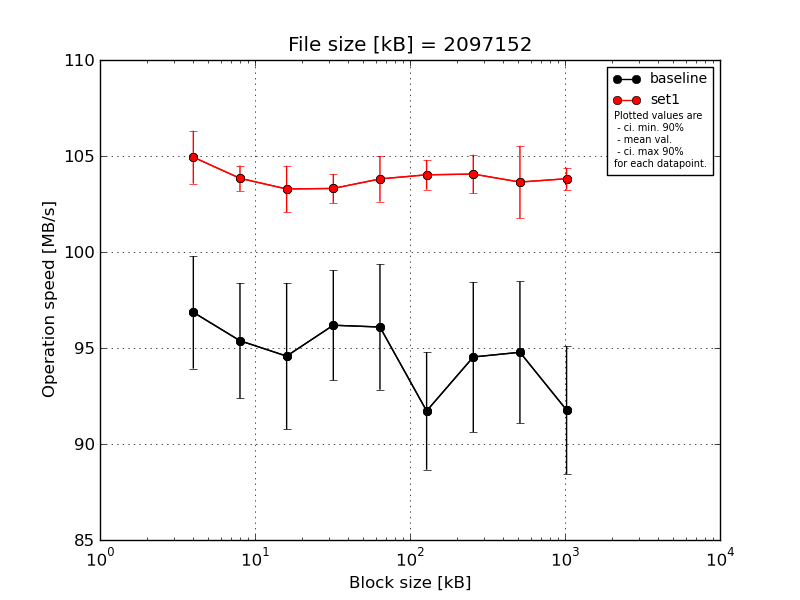
|
File size [kB] |
Block size [kB] |
| 64 |
128 |
256 |
512 |
1024 |
2048 |
4096 |
8192 |
16384 |
| baseline | 2097152 | 97.8 | 90.75 | 90.63 | 90.88 | 97.28 | 89.77 | 89.66 | 90.61 | 90.49 |
| 2097152 | 98.01 | 97.85 | 97.29 | 98.14 | 97.25 | 97.38 | 97.07 | 96.75 | 97.78 |
| 2097152 | 99.32 | 97.33 | 89.8 | 96.74 | 89.99 | 89.86 | 90.49 | 90.55 | 90.82 |
| 2097152 | 97.68 | 93.42 | 97.83 | 97.45 | 98.14 | 91.06 | 98.2 | 98.33 | 88.67 |
| 2097152 | 91.48 | 97.53 | 97.33 | 97.73 | 97.8 | 90.54 | 97.24 | 97.66 | 91.08 |
| mean val. |
96.86 |
95.38 |
94.58 |
96.19 |
96.09 |
91.72 |
94.53 |
94.78 |
91.77 |
| standard dev. |
3.07 |
3.16 |
4.0 |
3.01 |
3.43 |
3.21 |
4.1 |
3.87 |
3.49 |
| ci. min. 90% |
93.93 |
92.37 |
90.76 |
93.32 |
92.82 |
88.66 |
90.62 |
91.08 |
88.44 |
| ci. max 90% |
99.79 |
98.39 |
98.39 |
99.05 |
99.36 |
94.78 |
98.44 |
98.47 |
95.1 |
| geom. mean |
96.82 |
95.34 |
94.51 |
96.15 |
96.04 |
91.68 |
94.46 |
94.71 |
91.72 |
| median |
97.8 |
97.33 |
97.29 |
97.45 |
97.28 |
90.54 |
97.07 |
96.75 |
90.82 |
| first quartile |
97.68 |
93.42 |
90.63 |
96.74 |
97.25 |
89.86 |
90.49 |
90.61 |
90.49 |
| third quartile |
98.01 |
97.53 |
97.33 |
97.73 |
97.8 |
91.06 |
97.24 |
97.66 |
91.08 |
| minimum |
91.48 |
90.75 |
89.8 |
90.88 |
89.99 |
89.77 |
89.66 |
90.55 |
88.67 |
| maximum |
99.32 |
97.85 |
97.83 |
98.14 |
98.14 |
97.38 |
98.2 |
98.33 |
97.78 |
| set1 | 2097152 | 102.96 | 104.05 | 101.96 | 102.43 | 103.61 | 103.33 | 103.87 | 104.54 | 103.21 |
| 2097152 | 105.88 | 104.9 | 105.39 | 104.44 | 105.96 | 105.35 | 105.92 | 105.61 | 104.65 |
| 2097152 | 106.43 | 103.14 | 103.15 | 103.05 | 103.5 | 103.75 | 103.63 | 103.88 | 104.02 |
| 2097152 | 105.5 | 103.81 | 103.11 | 102.87 | 103.15 | 103.48 | 103.48 | 103.86 | 103.28 |
| 2097152 | 103.93 | 103.29 | 102.81 | 103.76 | 102.81 | 104.19 | 103.39 | 100.33 | 103.93 |
| mean val. |
104.94 |
103.84 |
103.28 |
103.31 |
103.81 |
104.02 |
104.06 |
103.64 |
103.82 |
| standard dev. |
1.44 |
0.7 |
1.27 |
0.79 |
1.24 |
0.81 |
1.06 |
1.98 |
0.59 |
| ci. min. 90% |
103.56 |
103.17 |
102.07 |
102.55 |
102.62 |
103.25 |
103.05 |
101.75 |
103.25 |
| ci. max 90% |
106.32 |
104.5 |
104.49 |
104.07 |
104.99 |
104.79 |
105.07 |
105.53 |
104.38 |
| geom. mean |
104.93 |
103.84 |
103.28 |
103.31 |
103.8 |
104.02 |
104.05 |
103.63 |
103.82 |
| median |
105.5 |
103.81 |
103.11 |
103.05 |
103.5 |
103.75 |
103.63 |
103.88 |
103.93 |
| first quartile |
103.93 |
103.29 |
102.81 |
102.87 |
103.15 |
103.48 |
103.48 |
103.86 |
103.28 |
| third quartile |
105.88 |
104.05 |
103.15 |
103.76 |
103.61 |
104.19 |
103.87 |
104.54 |
104.02 |
| minimum |
102.96 |
103.14 |
101.96 |
102.43 |
102.81 |
103.33 |
103.39 |
100.33 |
103.21 |
| maximum |
106.43 |
104.9 |
105.39 |
104.44 |
105.96 |
105.35 |
105.92 |
105.61 |
104.65 |
| baseline set1 difference |
8.34 % |
8.87 % |
9.21 % |
7.41 % |
8.03 % |
13.41 % |
10.08 % |
9.35 % |
13.13 % |
| ttest p-value |
0.0007 |
0.0004 |
0.0017 |
0.0009 |
0.0015 |
0.0 |
0.001 |
0.0019 |
0.0001 |
| ttest equality |
DIFF |
DIFF |
DIFF |
DIFF |
DIFF |
DIFF |
DIFF |
DIFF |
DIFF |
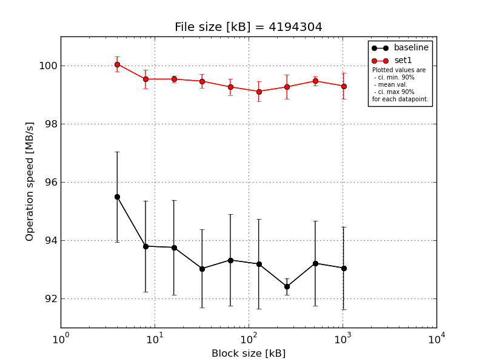
|
File size [kB] |
Block size [kB] |
| 64 |
128 |
256 |
512 |
1024 |
2048 |
4096 |
8192 |
16384 |
| baseline | 4194304 | 96.37 | 92.41 | 95.58 | 92.5 | 92.57 | 92.23 | 92.29 | 92.14 | 92.33 |
| 4194304 | 96.2 | 92.46 | 92.56 | 92.54 | 92.4 | 92.55 | 92.15 | 92.62 | 92.38 |
| 4194304 | 92.57 | 95.76 | 95.67 | 95.53 | 96.24 | 96.07 | 92.59 | 95.91 | 95.71 |
| 4194304 | 96.18 | 95.38 | 92.47 | 92.31 | 93.01 | 92.69 | 92.17 | 92.6 | 92.41 |
| 4194304 | 96.13 | 92.97 | 92.49 | 92.26 | 92.38 | 92.41 | 92.84 | 92.79 | 92.42 |
| mean val. |
95.49 |
93.8 |
93.76 |
93.03 |
93.32 |
93.19 |
92.41 |
93.21 |
93.05 |
| standard dev. |
1.63 |
1.64 |
1.71 |
1.4 |
1.65 |
1.62 |
0.3 |
1.53 |
1.49 |
| ci. min. 90% |
93.93 |
92.23 |
92.13 |
91.69 |
91.75 |
91.64 |
92.12 |
91.76 |
91.63 |
| ci. max 90% |
97.05 |
95.36 |
95.38 |
94.37 |
94.89 |
94.73 |
92.7 |
94.67 |
94.47 |
| geom. mean |
95.48 |
93.78 |
93.74 |
93.02 |
93.31 |
93.18 |
92.41 |
93.2 |
93.04 |
| median |
96.18 |
92.97 |
92.56 |
92.5 |
92.57 |
92.55 |
92.29 |
92.62 |
92.41 |
| first quartile |
96.13 |
92.46 |
92.49 |
92.31 |
92.4 |
92.41 |
92.17 |
92.6 |
92.38 |
| third quartile |
96.2 |
95.38 |
95.58 |
92.54 |
93.01 |
92.69 |
92.59 |
92.79 |
92.42 |
| minimum |
92.57 |
92.41 |
92.47 |
92.26 |
92.38 |
92.23 |
92.15 |
92.14 |
92.33 |
| maximum |
96.37 |
95.76 |
95.67 |
95.53 |
96.24 |
96.07 |
92.84 |
95.91 |
95.71 |
| set1 | 4194304 | 99.57 | 99.32 | 99.71 | 99.72 | 98.99 | 99.5 | 98.99 | 99.69 | 99.19 |
| 4194304 | 100.21 | 99.23 | 99.55 | 99.27 | 99.46 | 98.94 | 99.74 | 99.39 | 98.66 |
| 4194304 | 100.09 | 100.0 | 99.54 | 99.67 | 98.93 | 99.21 | 99.63 | 99.32 | 99.44 |
| 4194304 | 100.2 | 99.34 | 99.5 | 99.15 | 99.58 | 98.57 | 98.69 | 99.63 | 99.23 |
| 4194304 | 100.19 | 99.77 | 99.37 | 99.51 | 99.37 | 99.35 | 99.29 | 99.32 | 99.99 |
| mean val. |
100.05 |
99.53 |
99.53 |
99.46 |
99.27 |
99.11 |
99.27 |
99.47 |
99.3 |
| standard dev. |
0.27 |
0.34 |
0.12 |
0.25 |
0.29 |
0.37 |
0.44 |
0.17 |
0.48 |
| ci. min. 90% |
99.79 |
99.21 |
99.42 |
99.23 |
98.99 |
98.76 |
98.85 |
99.3 |
98.85 |
| ci. max 90% |
100.31 |
99.85 |
99.65 |
99.7 |
99.54 |
99.46 |
99.69 |
99.64 |
99.76 |
| geom. mean |
100.05 |
99.53 |
99.53 |
99.46 |
99.27 |
99.11 |
99.27 |
99.47 |
99.3 |
| median |
100.19 |
99.34 |
99.54 |
99.51 |
99.37 |
99.21 |
99.29 |
99.39 |
99.23 |
| first quartile |
100.09 |
99.32 |
99.5 |
99.27 |
98.99 |
98.94 |
98.99 |
99.32 |
99.19 |
| third quartile |
100.2 |
99.77 |
99.55 |
99.67 |
99.46 |
99.35 |
99.63 |
99.63 |
99.44 |
| minimum |
99.57 |
99.23 |
99.37 |
99.15 |
98.93 |
98.57 |
98.69 |
99.32 |
98.66 |
| maximum |
100.21 |
100.0 |
99.71 |
99.72 |
99.58 |
99.5 |
99.74 |
99.69 |
99.99 |
| baseline set1 difference |
4.78 % |
6.12 % |
6.16 % |
6.92 % |
6.37 % |
6.36 % |
7.42 % |
6.71 % |
6.72 % |
| ttest p-value |
0.0003 |
0.0001 |
0.0001 |
0.0 |
0.0 |
0.0 |
0.0 |
0.0 |
0.0 |
| ttest equality |
DIFF |
DIFF |
DIFF |
DIFF |
DIFF |
DIFF |
DIFF |
DIFF |
DIFF |